"Free as in free beer".Gerald Hurdle
Networking & Hardware
How to Install Windows using Boot Camp Assistant
Before You Begin
- Macbook Pro
- Your Algonquin College Network username
- Internet access
- DreamSpark account at https://plato.algonquincollege.com
- Windows 10 ISO
- USB flash drive (8+GB capacity)
Estimated time to complete: approximately 2.5 to 3 hours
Check for Updates
Be sure to install all OS X updates first, so Windows installs successfully.
- Log in to an administrator account on your Mac, quite all open apps, then lout out any other users.
- Choose Apple menu > Software Update. Install all available updates. If your Mac restarts after installing an update, choose Apple menu > Software Update again to install any additional updates.
- Go to www.apple.com/support/bootcamp to see if you need additional updates.
Download Microsoft Windows Operating System (OS)
- Download Windows 10 from: https://plato.algonquincollege.com/DigitalResources
- Login with your Algonquin College Username and password
- Add Windows 10 EDU to your cart.
- Language: English
- Architecture: 64-bit
- Check out: download the ISO file. Follow the download instructions.
- Notice the generated Product Key (high-lighted in red). You will need this Product Key during setup.
Feel free to download and try any other software products.
Launch Boot Camp Assistant
- Insert your USB flash drive. The capacity must be at least 8GB.
- Launch Boot Camp Assistant: Applications > Utilities > Boot Camp Assistant
- Print and read the Print Installation & Setup Guide.
- Click Continue.
- Did you previously install Windows 7? If YES, remove the Windows partition, close Boot Camp Assistant, and launch again.
- Unselect Download the latest Windows support software from Apple.
- Click Continue and follow the instructions.
Notes:
- set the Mac OSX and Windows partitions to be equal in size
- press the "option" key during the reboot cycle, and select "Windows" to perform the Windows setup
- unplug all USB devices except for the bootable USB flash drive
Post Setup of Windows
After you have setup Windows, install the following:
- Antivirus
- Boot Camp Support Software
For your protection, you should install antivirus software! You can choose either a free package or a paid / subscription version.
Some useful links from the College:
- http://help.algonquincollege.com/articles/How_To/How-can-students-protect-their-computers-from-viruses
- http://www.algonquincollege.com/infosec/students/s-resources/security-software/
How to Boot to the Other Operation System
Next, install the Boot Camp Support Software. This will install the correct drivers for FaceTime, the keyboard, display, wifi radio, trackpad, etc.
Follow the instructions at http://support.apple.com/kb/DL1638
OS X to Windows: System Preferences > Startup Disk > Select BOOTCAMP Windows > Restart...
Windows to OS X: Desktop > Search: Boot Camp > Settings > Boot Camp
From either O/S: re-boot, listen for the chime, press and hold the option key > select the O/S
To Remove Windows
NOTE: ALL software, settings and files will be removed from Windows!!!
Boot to OS X, and launch Boot Camp Assistant:
- Select Remove Windows 7.
- Friendly reminder: you're actually removing (deleting) Windows 10.
- Click Continue.
- Read the WARNING(!)
- Click Restore.
- Wait a few minutes.
- Click Quit to exit Boot Camp.
Frequently Asked Questions (FAQ)
- I did not need a USB external thumb-drive like Gerry said I needed. How come?
- According to the official Apple documentation: http://help.apple.com/bootcamp/assistant/6.0/
- "an 8 GB or larger external USB drive (a hard drive or a flash drive), formatted as MS-DOS (FAT)". Reading further in the documentation (Step 4, Prepare Your Mac for Windows), I saw this: "If the Select Tasks step doesn't appear, you don't need a USB flash drive or hard drive to install Windows." My MacBook Pro (MBP) was made in Mid 2014 (About This Mac), and for my particular model of MBP, I need an external USB drive. For newer MBPs, a USB drive is not required.
Week 2
Get to Know Your MacBook Pro
Congratulations! You're the proud owner of an essential tool required by every savvy mobile application design & development (MAD&D) student: a MacBook Pro (MBP).
This document gives a brief overview of the technical specifications of a MBP.
Display
The MAD&D includes a core set of courses on designing user interfaces (UI), improving user experiences (UX) and designing responsive web sites. It's for this reason you are required to have a 15" Retina display.
The term "Retina display" is a marketing term developed by Apple. Essentially, the term refers to devices --- iPad, MBP, and monitors --- that have a very high resolution. The resolution is so high, an average person is unable to see the individual pixels at a normal viewing distance.
Processor
Think of the processor as the brains of your MBP.
Apple uses processors made by Intel, which is one of the world's largest manufacturer of microprocessors.
The best piece of advice to consider when selecting a processor: the higher the speed, the better.
The processor for my MBP is: 2.8 GHz Intel Core i7
- 2.8 GHz refers to the clock speed
- Intel one of the world's largest manufacturers of microprocessors
- Core i7 is the Core family of processors from Intel
In general, the higher the clock rate, the faster your programs will run :)
These days, most processors are made up with more than one central processing unit (CPU), a
Modern day processors have multiple cores, with a core being a single central processing unit (CPU). The number of cores on a processor is typically a number that is a power of 2. My MBP has 4 cores, which can be expressed as: 2^2 == 2 * 2 == 4.
Memory
Specifies the amount of onboard memory available to the processor.
When you launch a program (like Photoshop), the operating system (OS X) loads the program into memory.
Having more memory allows you to launch multiple programs at the same time.
In general, the more memory you have, the faster your MBP will perform.
Storage
Did you know.... when you shutdown your MBP, all of the data in memory is wiped clean.
To prevent this from happening, we need permanent storage to keep all of our data and files.
Having a large storage capacity allows your to have more programs, data files, music, movies, etc.
Wireless
Allows for connecting to wireless (Wi-Fi) networks.
My MBP is rated 802.11ac Wi-Fi.
802.11ac is the latest --- and fastest --- rating for Wi-Fi, and is compatible with IEEE 801.11a/b/g/n (legacy Wi-Fi technology).
About This Mac
About This Mac provides all of the technical information for your MBP :)
To launch:
- Apple menu (the Apple symbol located in the upper-left hand side) -> About This Mac
About This Mac allows you to:
- get the version of OS X
- get your Serial Number
- update your software
- generate more detailed system reports
Here is a screenshot of my MBP:
Adding a Printer [Mac]
Do you need to print a document? Do you really, need to print it?
Follow these instructions to add the Lexmark network printer to your MacBook Pro:
- Launch: System Preferences
- Click: Printers & Scanners
- Click: +
- Select: Add Printer or Scanner...
- Select the tab: IP
- Fill-in:
- Address: 10.50.15.135
- Protocol: Line Printer Daemon - LPD
- Queue: <Leave Blank>
- Name (change to): MAD&D Lab
- Location: T127
- Use: Generic PostScript Printer
- should automatically change to: Lexmark T644
- Click: Add
Enjoy!
How to Add a Printer [Advanced]
You can also add local and network printers using CUPS.
"CUPS (cups.org) is the standards-based, open source printing system developed by Apple Inc. for OS X and other UNIX-like operating systems. Cups uses the Internet Printing Protocol (IPP) to support printing to local and network printers."
Usage
- Open a browser: http://localhost:631
- On the menu, click: Administration
- Unders Printers, click: Add Printer
- Follow the instructions.
Your Apple ID
What's an Apple ID?
An Apple ID is your user name for everything you do with Apple:
- shop the iTunes Store
- enable iCloud on all your devices
- buy from the Apple Online Store
- make a reservation at an Apple Retail Store (2 in Ottawa: Rideau Shopping Centre & Bayshore Shopping Centre)
- access the Apple Support website,
- and more.
To Set Your Apple ID
System Preferences -> Users & Groups
- Set your Apple ID to your Algonquin College email address (mandatory please)
- You can have multiple Apple ID, one of which must be your Algonquin College email
- Confirm your user account can administer your computer (launch Terminal.app, and run this command: groups)
Here's a link on how to change your AppleID: http://osxdaily.com/2014/11/08/change-apple-id-mac-os-x/
References
Week 3
IMPORTANT NOTE on LAB 3
You have a choice on which version of Lab 3 you wish to complete.
You can complete either Lab 3 - Hello World iOS App [Classic] or Lab 3 - Three Amigos iOS App
Lab 3 - Hello World iOS App [Classic]: this is the lab I used in Fall 2015; classic 'Hello World!' in iOS
Lab 3 - Three Amigos: think of this lab as a 'sneak peak' of how native development is done on Mac
The choice is yours :)
Intro to iOS App Development
What you will do
To develop your first iOS app using the Swift programming language.
Before You Begin
You need Apple's Xcode to develop iOS apps and OS X apps.
You can download Xcode for free from the App Store.
Next, download any Updates to Xcode by going to the App Store (notice: Updates)
Update to version 8:

Xcode
Xcode is Apple's Integrated Development Environment (IDE) that developers use to design, create, and test iOS apps and OS X apps.
iOS apps run on iPhones, iPads and iWatches (i.e. devices), whereas OS X apps run on MacBook Pros and iMacs (i.e. desktop).
Overview of the Three Amigos App
The Three Amigos iOS app displays three popular mascots of the open source community:
- Android
- Duke
- Tux
Features:
- Swift programming language
- Storyboard, View Controller, Label, UIImage
- image assets
- Outlets
- Actions
- Git and GitHub for source code versioning
Here's my video introduction of the Three Amigos app:
Here's a screenshot of the app running on the iOS Simulator:
Create an Xcode Project
In this step, I create my Three Amigos project in Xcode:
Design the View
In this step, I design the presentation layer (i.e. what the user sees):
Import Assets
Resources for this step: download mascots.zip to your desktop, and unzip (by double-clicking)
In this video, I import the mascot PNG images into my project:
Outlets
In this video, I make two Outlets --- one for the Image View and one for the Label:
Actions
In this video, I make two Actions --- one for the Previous button and one for the Next button:
Publish to GitHub
[[NOTE: I'll need to provide instruction on how to create your GitHub.com account]]
In this final step, I use Git as my source code versioning tool, and I push (i.e. upload) my project to my repository hosted on GitHub.com
Lab 3 - Three Amigos iOS App
 Find Rubric
Find Rubric

Week 4
** NEW ** How to Install Microsoft's Emulator for Android **
Purpose
This document describes how to install Microsoft's Visual Studio Emulator for Android on Windows OS.
Summary of Steps
- Remove HAXM
- Install Visual Studio's Emulator for Android
- Run Your APK on the Emulator
1.0 Remove HAXM
Intel's hardware accelerated execution manager (HAXM) interferes with Microsoft's emulator for Android, and must be removed.
To uninstall Intel HAXM, run the installer again or use the Control Panel.
- In Search Windows, type: change or remove a program
- Notice: Control Panel
- Select HAXM from the list and then click Uninstall
Follow the instructions from the uninstall wizard.
2.0 Install Visual Studio's Emulator for Android
Download and install the Visual Studio emulator for Android: https://www.visualstudio.com/vs/msft-android-emulator
Accept all default settings during the installation, and follow the instructions.
To complete the installation, you'll need to re-boot Windows OS.
2.1 Configure Visual Studio Emulator for Android
- Open: Visual Studio Emulator for Android
- Locate the drop-down box for the API level, and select Marshmallow (API 23)
- Select 5.7" Marshmallow (6.0.0) XHDPI Phone
- Install the profile: click the download symbol (downward pointing arrow)
Reference screenshot:
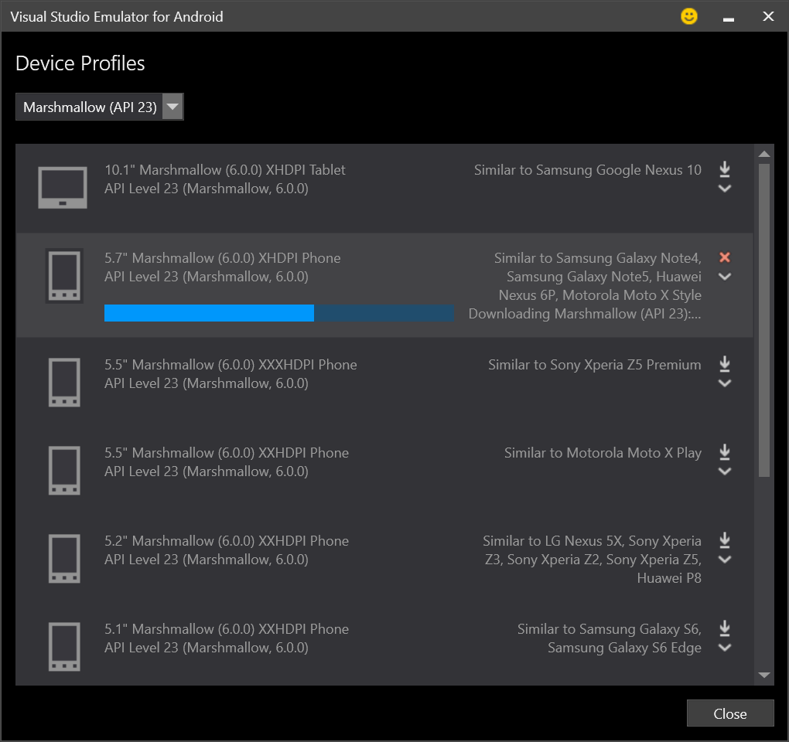
3 Run Your APK on the Emulator
3.1 Launch the 5.7" Marshmallow Phone
- Select: 5.7" Marshmallow (6.0.0) XHDPI Phone
- Click: green play button
Reference screenshot:

3.2 Build Your APK
Build your APK (Android PacKage). Make sure you target API 23.
Need a refresher on how to build an APK? Read this: Setup Android Development [Windows] Important Sections: 6.0 and 7.2. Ignore: 7.0 and 7.1
3.3 Install Your APK on the Emulator
Run the following command to install your APK on the running emulator:
adb install build\outputs\apk\MyFirstApp-debug.apk
Look for: Success
4.4 Run Your App
- Click the Gallery icon on the Home screen. The Gallery button is a white circle with smaller see-thru holes.
- Search for your app
- Click your app to launch it
Reference screenshot:
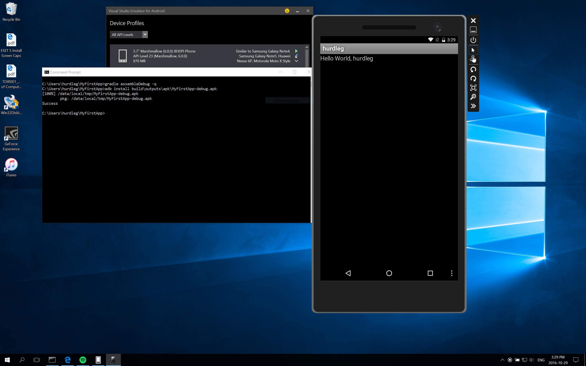
Notice:
- build: -q makes gradle run quietly
- install: use the adb (Android Device Bridge) to install the app onto the running emulator
- APK: Android apps are packaged into an apk file (Android PacKage)
Reference Links
Setup Android Development [Windows]
What you will do
You will install the Android SDK (software development kit) on Microsoft Windows and make your first Hello World! Android app.
Revision History
Last updated on: Wednesday Sep. 28 at 10:45pm
What is an Environment?
Suppose you want to launch Edge, Microsoft's newest web browser. How does the operating system (OS) --- Windows 10 --- know where to find Edge?
Windows, the OS, has a collection of system level variables, that are collectively known as the environment.
There are many environment variables, and the Path environment variable is important one to know. When you launch Edge, Windows searches the Path looking for Edge.exe (the executable program).
There are two possible outcomes when the OS searches the Path for an executable program. Either:
- the app is found, loaded into memory, and runs as a process
- the app is not found, in which case an error message is displayed
Mobile developers need to know how to prepare their OS system environment to support app design & development. This lab teaches you how to do this for Android development on Windows 10.
Every OS that I'm familiar with ---- Mac OS X, Linux (Fedora & Ubuntu), Android (OS), QNX ---- all support environment variables and the Path. What differs is the syntax and how the environment variables are managed; that is specific to the OS.
The skills learned in this lab are transferrable to other OSs, including Mac OS X and Linux.
Import Note on Cut and Paste
This lab features many technical details on how to properly setup your Windows environment for developing Android apps.
There is a time to cut 'n paste. This lab is not one of those times (!)
For this lab, I'm requesting you type the commands as displayed in the lab. I use HTML formatting to high-light the commands; if you copy and paste, you'll most likely copy HTML codes that don't make sense on the command line.
Boot to Windows
You need to boot to Microsoft Windows if you are currently on Mac OS X.
Here is another way to boot to Windows:
Spotlight > System Preferences > Startup Disk > Select: BOOTCAMP Windows > Restart...
Your MacBook Pro will now boot to Microsoft Windows.
1.0 Update the Operating System
As the first step, update the Windows OS:
- In Search Windows , type: Check for updates
- Click the button: Check for updates
Your MacBook Pro may re-boot
Depending on the update, your MacBook Pro (MBP) may re-boot. If your MBP does re-boot, repeat this step.
2.0 Get Java
Did you know.... native Android applications are written in the Java programming language.
In this step, you will download and install the Java Development Kit (JDK) for the Windows platform:
- Launch a web browser: http://www.oracle.com/technetwork/java/javase/downloads/index.html
- Locate the Download button for the JDK; click the button (screenshot: java-jdk-1.PNG)
- Scroll to: Java SE Development Kit 8u112
- Select: Accept the Licence Agreement
- Download: Windows x64 (jdk-8u112-windows-x64.exe)
- Click: Run after the download and security scan has finished
Accept the default values for all settings (i.e. click Next until the final Close).
Notes:
- make sure you download the 64-bit version (Windows x64)
- the Java Runtime Environment (JRE) alone is not sufficient to develop Android applications
2.1 Remember Your Initial Path Environment Variable
Here's a pro-tip to remember: make a backup before making changes. That way, if something goes wrong because of your changes, you can recover :)
Let's remember your Path system environment variable before making changes to it!
- In Search Windows (search-windows.PNG), type: edit system environment variables
- Select: Edit the system environment variables Control Panel
- Click the button (env.PNG): Environment Variables...
- Look for: User variables
- Select: Path (the User variable path)
- Click: Edit...
- Select all the characters for the variable's value: control-a
- Click: Cancel (close Edit User Variable)
- Click: Cancel (close Environment Variables)
- Click: Cancel (close System Properties)
- Launch Notepad (Search Windows: Notepad).
- Paste (control-v) into Notepad.
- File > Save As: My_Initial_Path.txt
- Close: Notepad
Use My_Initial_Path.txt to restore your Path to it's original value if you make a mistake.
2.2 Create the JAVA_HOME User Environment Variable
In this step, you will create a new User environment variable called: JAVA_HOME
As you'll see in the next step, the JAVA_HOME environment variable will allow the Windows OS to find Java.
- Search Windows: edit system environment variables
- Click the button: Environment Variables...
- Look for: User variables
- Click the button: New...
- Set the Variable name to: JAVA_HOME
- Click: Browse Directory...
- Expand: This PC > BOOTCAMP (C:) > Program Files (x86) > Java > jdk1.8.0_112
- Click: OK (close Browse For Folder)
- Click: OK (close New User Variable)
- Click: OK (close Environment Variables)
- Click: OK (close System Properties)
Compare your JAVA_HOME to mine: java-home.PNG
2.3 Add JAVA_HOME to the Path User Environment Variable
At this point, you have installed the Java SE JDK on the Windows operating system.
In this step, you will configure your Path environment to include JAVA_HOME. This allows Windows to locate Java programs, such as javac (the Java compiler) and java (the Java virtual machine).
The high-level steps are:
- Edit the user environment variable: Path
- Append Java's bin\ folder to the Path
The Windows operating system uses the Path environment variable to search for and locate executable programs on your computer. For example, when you launch Notepad (a basic text editor), Windows locates notepad.exe by searching all the folders (directories) listed in Path.
- Search Windows: edit system environment variables
- Click the button: Environment Variables...
- Look for: User variables
- Select the User variable: Path
- Click the button: Edit...
- To the very start of the Path, type the following (but don't type ...rest of path):
%JAVA_HOME%\bin;....rest of path - Click: OK (close Edit User Variable)
- Click: OK (close Environment Variables)
- Click: OK (close System Properties)
2.4 Test Java is in Your Path
In this step, you will test your Windows environment to make sure you've properly included Java in your Path. In other words, you are verifying that you did the above steps correctly.
- Search Windows: command prompt
- Select: Command Prompt Desktop app
- From the prompt, type: set ⏎
- The set command displays your environment variables on Windows. For more information, use the help command. Type: help help ⏎
- ⏎ - means the enter/return key
- Verify the accuracy of your work.
- Do you see JAVA_HOME?
- If your answer is NO, you need to re-trace your steps
- Is the java compiler, called javac, included in your Path system environment variable?
- type: javac -version ⏎
- If you do not see the version of the Java compiler, you have a mistake in your environment and cannot continue; you need to re-trace your steps (!)
- Is the java virtual machine, named java, included in your Path system environment variable?
- type: java -version ⏎
- If you do not see the version of the Java virtual machine, you have a mistake in your environment and cannot continue; you need to re-trace your steps (!)
- Close Command Prompt, type: exit ⏎
Compare your output for javac -version and java -version to mine: verify.PNG
3.0 Get Android Studio
In this step, you will download and install Android Studio.
Android Studio (AS) is the official integrated development environment (IDE) for developing native Android applications. It's the XCode of Android development :)
This semester, you'll learn how to make hybrid apps --- apps that are developed using HTML5, CSS3 and Javascript, and then wrapped in a native container using Cordova.
3.1 Install Android Studio
- Download and install the latest version (Version 2.2.2.0) of Android Studio for Windows: https://developer.android.com/studio/index.html
- Make sure Android Studio successfully launches (Windows Search: Android Studio)
- Close Android Studio: click the X in upper-right hand side of the Welcome to Android Studio window
Why close? You don't use an IDE (like Xcode or Android Studio) to make hybrid apps. Instead, you use other tools, such as the command-line, Brackets and Cordova.
Don't worry... we'll use Android Studio in Level 3 --- one year from now --- when you learn native Android development in MAD9132.
3.2 Create the ANDROID_HOME User Environment Variable
Create a new User environment variable called: ANDROID_HOME
ANDROID_HOME's value is the fully qualified path to the Android Software Development Kit (SDK) folder (directory) on your file system.
- Search Windows: edit system environment variables
- Click the button: Environment Variables...
- Look for: User variables
- Click: New...
- Set the Variable name to: ANDROID_HOME
- Set the Variable value to: %USERPROFILE%\AppData\Local\Android\sdk
- Click: OK (close New User Variable)
- Click: OK (close Environment Variables)
- Click: OK (close System Properties)
Compare your ANDROID_HOME to mine: android-home.PNG
3.3 Add ANDROID_HOME to the Path User Environment Variable
Edit the User Path to include ANDROID_HOME
- Search Windows: edit system environment variables
- Click the button: Environment Variables...
- Look for: User variables
- Select the User variable: Path
- Click the button: Edit...
- To the very start of the Path, type the following:
%ANDROID_HOME%\tools;%ANDROID_HOME%\platform-tools;%JAVA_HOME%... - Click: OK (close Edit User Variable)
3.4 Test Android is in Your Path
- Search Windows: command prompt
- Select: Command Prompt Desktop app
- Is android included in your Path system environment variable?
- type: android ⏎
- If you do not see the Android SDK Manager, you have a mistake in your environment and cannot continue; you need to re-trace your steps (!)
4.0 Android SDK Manager
In this step, you will download and install the various pieces of software needed for Android development.
Important #1: resize the Android SDK Manager window so you can see more information. I suggest adjusting the column widths by going to the vertical divider near the column headings.
Important #2: only see 1/2 of the AVD window? Click the AVD window (to get focus), and then "alt + space + m" to move the window.
Install the following software components:
Tools (android-sdk-1.PNG)
- Android SDK Tools: Rev 25.2.2
- Android SDK Platform-tools: Rev. 25
- Android SDK Build-tools: Rev. 25
Android 7.1.1 (API 25) known as Nougat (android-sdk-1.PNG)
- check all software titles listed under API 25
- For example,
- Documentation for Android SDK
- Google APIs Intel x86 Atom_64 System Image
- etc.
Extras (android-sdk-2.PNG)
- Android Support Repository: Rev. 39
- Google Repository: Rev. 38
- Google USB Driver: Rev. 11
Note: you may need to click the Install packages button more than one time. This is required because of different licensing agreements.
Close the Android SDK Manager when done.
Close the Command Prompt window.
5.0 Create the GRADLE_HOME User Environment Variable
Gradle is a build automation tool that's used to build Android projects.
Good news.... gradle is included in the Android Studio bundle that you previously downloaded (Step 3).
At this point in the lab, you've created 2 user environment variables:
- JAVA_HOME
- ANDROID_HOME
Apply what you have just learned, and create a user environment variable for gradle:
- Variable name: GRADLE_HOME
- Variable value: C:\Program Files\Android\Android Studio\gradle\gradle-2.14.1
Compare your GRADLE_HOME to mine: gradle-home.PNG
5.1 Add GRADLE_HOME to the Path User Environment Variable
Include gradle in your Path user environment variable.
Apply what you've just learned, and add the following to the very start of the User Path:
%GRADLE_HOME%\bin;
5.2 Test Gradle is in Your Path
Launch Command Prompt, and run:
C:\Users\hurdleg> gradle -version
Compare your output to mine: verify.PNG
You should see Gradle's version number. If you do not, you have an issue with your environment and can't proceed to the next step; you'll need to retrace your steps.
5.3 Final Version of the Path System Environment Variable
Compare your Path system environment variable to mine: path.PNG
6.0 Create an Android Project with Command Line Tools
Run the following command from Command Prompt (cmd):
C:\Users\hurdleg> cd %USERPROFILE% C:\Users\hurdleg> android list targets
This android list targets prints a list of the available Android platforms you've downloaded for your SDK. Find the platform against which you want to compile your app. Make a note of the target ID (it will be an integer number). I suggest you select the lowest target ID version possible. Following these instructions the target ID should be: 1
Next, create an Android project:
C:\Users\hurdleg> android create project -g -v 2.0.0 --target TARGET-ID --name MyFirstApp --path MyFirstApp --activity YOUR_USERNAME --package com.algonquincollege.YOUR_USERNAME.myfirstapp
Replace TARGET-ID with your target ID from the previous step, and replace YOUR_USERNAME with your Algonquin College username.
You should see statements like: "Created directory..." and "Added file..." If you do not, you have an issue with your environment; take the time and re-trace your steps.
Take the time to thoroughly read the output from this command. If you see words like "error", "fail", etc. you have an issue. Use the information from the error message to help trouble-shoot before proceeding.
7.0 Create an AVD
Create an Android Virtual Device (AVD). The Android Emulator runs an AVD as a virtual machine.
To launch the Android Virtual Device (AVD) Manager, launch a Command Prompt window and type the following command:
C:\Users\hurdleg> start android avd
Resize the window, and click the Create... button and set the following specifications:
| AVD Name | MAD9111 |
| Device | Nexus 6 (5.96", 1440 x 2560: 560dpi) |
| Target | Android 6.0 - API Level 23 |
| CPU/ABI | Intel Atom (x86_64) |
| Keyboard | ✓ Hardware keyboard present |
| Skin | Skin with dynamic hardware controls |
| Front Camera | None |
| Back Camera | None |
| Memory Options - RAM | 768 |
| Memory Options - VM Heap | 64 |
| Internal Storage | 200 MiB |
| SD Card | 9 MiB |
| Emulation Options | ✓Use Host GPU |
7.1 Start the MAD9111 AVD
From the Android Virtual Device (AVD) Manager, select the MAD9111 AVD and click Start...
Important #1: resize the window so you can see more information. Take the time to read the messages. Specifically, look for words like "error..." or "not found...".
Important #2: only see 1/2 of the AVD window? Use "alt - space - m" + arrow keys to move :)
Wait until the AVD boots and displays the apps. This should take no more than 5 minutes, with 5 minutes being the maximum. If you've waited longer than 5 minutes, ask for help.
- Leave the MADD9111 AVD running inside the Android Emulator
- Close the AVD Manager (the manager; not the AVD)
7.2 Run Your App from the Command Line
7.2.1 Edit build.gradle
- Change directories into MyFirstApp
C:\Users\hurdleg> cd %USERPROFILE% C:\Users\hurdleg> cd MyFirstApp
- Edit build.gradle
C:\Users\hurdleg\MyFirstApp> notepad build.gradle
- Replace the complete line: runProguard false with: minifyEnabled false
- Save your changes (File > Save).
- Close Notepad (File > Exit).
7.2.2 Run Your App
Run the following commands in the Command Prompt window:
C:\Users\hurdleg> cd %USERPROFILE% C:\Users\hurdleg> cd MyFirstApp C:\Users\hurdleg\MyFirstApp> gradle C:\Users\hurdleg\MyFirstApp> gradle tasks C:\Users\hurdleg\MyFirstApp> gradle assembleDebug
Take the time to thoroughly read the output from this command. If you see words like "error", "fail", etc. you have an issue. Use the information from the error message to help trouble-shoot before proceeding.
Next, run:
adb install build\outputs\apk\MyFirstApp-debug.apk
Notice the build target has an extension of: .apk
APK stands for Android PacKage (APK). Android apps are deployed to Android devices (real or emulated).
On the emulator, locate your username and launch the app (select & double-click). You may need to scroll thru the apps to find your app.
You should see what I see:
7.2.3 Uninstall Your App
Important: complete the Lab activity before you uninstall your app.
Suppose you made a change to your MyFirstApp project.
When you make a change, you must:
- Re-build your project.
- Uninstall the previous version of MyFirstApp on the AVD.
- Install the new version of MyFirstApp.
Run the following command to uninstall:
adb uninstall com.algonquincollege.YOUR_USERNAME.myfirstapp
Week 5
The Web is Amazing!
Web Architecture: Client - Server Model
Introduction
This document introduces the client-server model , which is an essential component of web architecture.
Let's begin with the server side.
The Web Server
Looking at the words, server, in the general sense, is something that serves --- it has something to offer, such as things or services.
Because we are interested in web development, we require a web server: a special kind of server that is needed for the world-wide-web (www).
The web server, when requested, returns the assets of the web: html pages, images, photos, music, video, etc.
Popular Web Servers
The Apache HTTP server is the world's most used web server software.
Microsoft's web server is Internet Information Services (IIS).
Other web severs tend to be programming language specific. For example, GlassFish is a web server plus it's an application server for the Java EE platform (i.e. Java on the server-side).
So, how do you request a web page?
The Web Client
Your favourite web browser (browser) is used to make requests to a web server.
Popular Web Browsers
- Chrome (Google)
- Safari (Apple)
- Edge and Internet Explorer (Microsoft)
- Firefox
- Opera
How do the Web Client and Web Server Communicate?
For your web browser (i.e. client) to communicate to a web server (edumedia.ca), there needs to be a protocol --- an established set of rules and procedures that is understood by both the client and server.
And the protocol of the web is: Hypertext transfer protocol (HTTP ).
The client-server model is based on request-response communication.
To make a request, you enter the uniform resource location (URL ) in your browser's address bar. For example: http://edumedia.ca
The web server (edumedia.ca) is listening on port 80, and receives your request. Now the web server goes into action to respond to your request.
When you entered http://edumedia.ca the web server understands this to mean: http://edumedia.ca:80/index.html
The web server looks for a resource, a file in this example, named: index.html
Next, the contents of the index.html file is sent back to your browser (i.e. the client). This is the web server's response to your browser's request.
The contents of the index.html is marked-up in the language of the web: hypertext markup language (HTML ). Your browser knows how to read and understand the <html> codes, such as <h1>, <a>, <em>, etc. Your browser displays the content as instructed by the <html> codes.
What if the Resource Cannot Be Located?
The web server will return a status code of 404, which means the named resource can not be found.
Try it for yourself: http://edumedia.ca/foo.html
What do you see?
WAMP
You will Learn
As savvy web developers, we need to install the tools needed for web development. In this lab, you will install and configure the WAMP software stack on Microsoft Windows.
Let's begin with defining the WAMP stack.
The First Letter
- The first letter refers to the host operating system (O/S):
- L - Linux
- M - Mac (OS X)
- W - Microsoft Windows
The Second Letter
- The second letter, A, refers to the Apache web server.
- Name: "A Patchy Server"
- Very popular web server; still #1(?)
- On the web: http://apache.org
The Third Letter
- The third letter, M, refers to the MySQL database.
- Open source relational database management system (RDBMS); you'll learn more about MySQL next term :)
- SUN paid approximately $1 billion in 2008; Oracle acquired SUN in 2010;
- On the web: http://www.mysql.com
The Fourth Letter
- The forth letter, P, refers to PHP.
- PHP is a server-side scripting language; you'll learn more about PHP next term :)
- Alternatives (but rare):
- Perl
- Python
- On the web: http://www.php.net
1. Installation
Boot to Windows, and install MAMP for Windows: https://www.mamp.info/en/downloads/
Notes:
- The latest version for Windows is: MAMP & MAMP PRO 3.2.2
- Download size is: 290 MB
During installation, accept all default values by clicking Next until the final Install button.
When installing MAMP, a C:\MAMPPRO folder will be installed in addition to your C:\MAMP folder. Please ignore C:\MAMPRO --- this is the pro version of MAMP, and requires you to purchase it.
Do not remove your C:\MAMP or C:\MAMPPRO folder. Removal of this folder may break the MAMP/MAMP PRO Uninstaller!
2. First Steps
After successful installation you can launch your local servers. Start MAMP for Windows and click on the Start Servers button. In the status display in the upper right corner, the launch status of the servers is displayed.
The web server (Apache) starts by default on port 80, the database server (MySQL) on port 3306. When calling your web page in a web browser, you must enter the Apache port at the end of the URL, e.g.: http://localhost:80
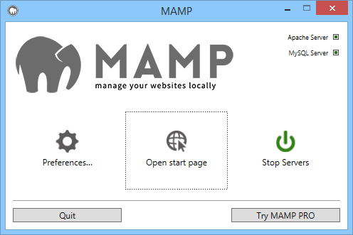
-
Preferences …
Set your preferences for MAMP. See the Preferences section for more details.
-
Open Start page
Open the start page of your local web server.
-
Start Servers / Stop Servers
Start or stop the Apache and MySQL services of MAMP.
3. Preferences
3.1 Start/Stop
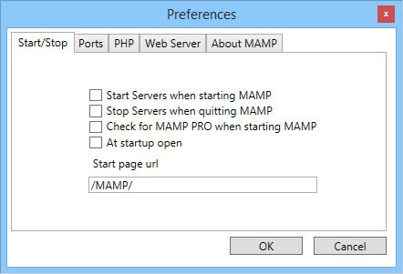
-
Start Servers
The Apache and MySQL services will start automatically when you launch MAMP.
-
Stop Servers
The Apache and MySQL services will be stopped automatically when you quit MAMP.
-
Check for MAMP PRO
You will be prompted whether you want to start MAMP or MAMP PRO when this option is selected.
-
At Startup Open
The Webstart page will automatically open at the startup of MAMP when you select this option.
3.2 Ports
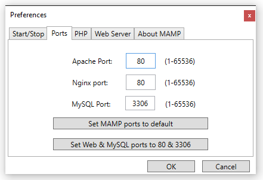
Server programs, when addressed via the network, need to be assigned to a certain network port. This way, multiple server programs may run on one server machine. Every service has a default port: The Apache web server typically uses port 80, Nginx also uses port 80 and the MySQL database server utilises port 3306.
These ports are configurable. The default configuration for MAMP uses ports 8888, 7888 and 8889 . That way, the MAMP servers can run alongside other servers installed on your PC. Should ports 8888, 7888 and 8889 be in use by a different application, please change the values accordingly.
The button Set Web & MySQL ports to 80 & 3306 will set the ports to the value commonly used on the internet. The button Set MAMP ports to default will reset the ports for Apache, Nginx and MySQL to 8888, 7888 and 8889.
If you want MAMP to be available via the Internet please make sure that the configured ports are opened in your firewall.
Click the button: Set Web & MySQL port to 80 and 3306
3.3 PHP
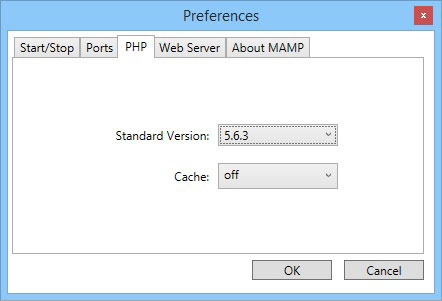
-
Standard Version
Choose version 7.0.9. The available PHP versions depend on the installed version of MAMP.
-
Cache
Caching can speed up the execution of your PHP code. The default caching option is off. OPcache is only available with PHP 5.5.x, eAccelerator only with versions before 5.5.
3.4 Web Server
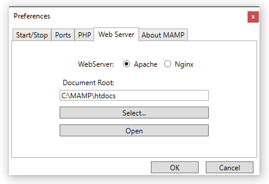
- Web Server
Choose either the Apache or Nginx web server.
-
Document Root
Click on "Select..." to select where your html/PHP files and images are stored. This directory is called Document Root. The default Document Root in MAMP is:c:\MAMP\htdocs. Keep this Document Root.
3.5 The MAMP Start Page
The default MAMP start page provides links to access utilities such as phpMyAdmin, phpInfo, SQLite Manager, phpLiteAdmin, FAQ, and the MAMP Website.
4.0 Create a Web Page
To your Document Root folder (C:\MAMP\htdocs), create a new folder named: yourAlgonquinUsername (e.g. bond007)
Launch an editor (e.g. Notepad), and create a new file named: index.html
Important: make sure the file extension is ".html" and not ".txt"
- Notepad > File > Save As.... -> File name (include the quotes ") > "index.html"
- Click: Save
The contents of index.html:
<!doctype html>
<html>
<head>
<meta charset="utf-8">
<title>My Home Page on MAMP for Windows</title>
</head>
<body>
<h1>Hello World!</h1>
<p>My <em>first</em> web page on <strong>MAMP for Windows</strong>.</p>
<ul>
<li>Editor: Notepad</li>
<li>Delivery: created index.html in C:\MAMP\htdocs\<em>username</em></li>
<li>Operating System: Microsoft Windows</li>
<li>Web Server: Apache</li>
</ul>
<h4>Author: YOUR FIRSTNAME LASTNAME (yourAlgonquinUsername)</h4>
</body>
</html>
Feel free to express yourself! You're encouraged to dress-up your index page. Just make sure your full name appears.
5.0 View Your Web Page
Launch a web browser and view your web page:
- http://localhost/username
- http://127.0.0.1/username
where:
- username is your Algonquin College username (e.g. bond0007)
Did you notice.... localhost and 127.0.0.1 mean the same thing. Humans prefer the name (localhost), with the computer (network, actually) preferring 127.0.0.1
Do you see your webpage?
- YES :: SUCCESS!
- NO :: re-trace your steps
6.0 Stop MAMP for Windows
To stop the MAMP for Windows server, locate the MAMP application, and click: Stop Servers
Finally, close the application.
Check your understanding: open (or refresh) your web browser's page: http://localhost/username
Week 6
Lab 6 - Mobile Device Specifications
Purpose
- To research and document the specifications of different mobile devices.
Work Assignment
You are required to work in groups of size 2 or 3 students.
Please choose your partner(s) wisely.
Important Information: Your Web Site on EduMedia.ca
Did you now... as a MAD&D student, you have your own web site hosted on EduMedia.ca
Your URL address will be of the form:
http://yourAlgonuinCollegeUsername.edumedia.ca
For example, here's my web page:
http://hurdleg.edumedia.ca
How to FTP to Your Account on Edumedia.ca
To FTP web pages (HTML files) to your account on EduMedia.ca, use the following login credentials:
- Username: yourAlgonquinCollegeUsername (e.g. bond007)
- Password: your Student ID without the leading (first) 0 (zero)
Tasks
Together with your lab partner(s), select and sign-out 2 (or 3) different mobile devices from the lab's device cabinet. The number of mobile devices is to equal your group size (i.e. 2 devices for pairs, 3 devices for groups of 3).
The devices must be from different platforms. For example, an Android smartphone and a BlackBerry smartphone would be permitted; a BlackBerry smartphone and a BlackBerry PlayBook would not.
Research the specifications for each device. Document your findings using the device template (see next).
Device Template
Complete this template for each device:
| Device: | Example: iPhone 5 |
| Model: |
A1530: iPhone 5s (GSM model) Note: Model number on the back cover. |
| Platform: | iOS by Apple |
| Width: | 58.5mm |
| Height: | 123.8mm |
| Thickness: | 7.6mm |
| Weight: | 112g |
| Screen Resolution: | |
| Screen DPI / PPI | |
| Storage: | 64 GB |
| Memory: | 1 GB |
| Processor: | Apple A6 |
| Wi-Fi: | Wi0Fi 802.11 a/b/g/n |
| Bluetooth Version: | 4.0 |
| Camera Specifications: | 8 MP 93,264x2,448) |
| Video: | 1080p (30fps) |
| Rated battery life: | 8h talk (3g), 40h music |
| Released: | Sept. 21, 2012 |
| Unique Features: |
|
| Would you purchase this device? Explain your decision. | YES xor NO. Justification.... |
Deliverables
Publish your device specifications as a web page to your http://yourCollegeUsername.edumedia.ca web site. The relative URL must be: /mad9111/lab6/index.html
Don't see the mad9111 folder (directory) on your edumedia.ca? No problem... create it :)
The web page must include an author section that identifies you and your partner(s):
- Firstname Lastname (email address)
For example:
Gerry Hurdle (hurdleg@algonquincollege.com) James Bond (bond007@algonquincollege.com)
Note: use the <mailto:> tag for your @algonquinlive.com email address.
Submission
Use Canvas' Submit Your Assignment and provide the URL to your web page hosted on http://yourUsername.edumedia.ca
Only one submission is required for the group please.
Week 7
Essential CLI Commands
Essential CLI Commands
for
OS X and Windows
OS X
On Mac, to launch Terminal.app: Spotlight > Terminal
Note: the vast majority of these commands will run on UNIX / Linux systems.
| Command | Description | Useful Options | Examples |
|---|---|---|---|
| cat | concatenate and print files |
|
|
| cd | change directory |
|
|
| clear | clear the terminal screen |
|
|
| cp | copy files |
|
|
| date | display or set date and time |
|
|
| history | display the command history list with line numbers |
|
|
| ifconfig | configure network interface parameters |
|
|
| kill | terminate or signal a process |
|
|
| ls | list directory contents |
|
|
| man | format and display the on-line manual pages |
|
|
| mkdir | make directories |
|
|
| more |
file perusal filter for crt viewing |
|
|
| mount | mount file systems |
|
|
| mv | move files |
|
|
| nano | Nano's ANOther editor, an enhaned free Pico clone |
|
|
| netstat | show network status |
|
|
| nslookup | query Internet name servers interactively |
|
|
| ping | send ICMP ECHO_REQUEST packets to network hosts |
|
|
| pkill | find or signal processes by name |
|
|
| ps | process status |
|
|
| pwd | return working directory name |
|
|
| rm | remove directory contents |
|
|
| sudo | execute a command as another user |
|
|
| top | display and update sorted information about processes |
|
|
| touch | change file access and modification times |
|
|
| traceroute | print the route packets take to network host |
|
|
| uname | print operating system name |
|
|
| who | display who is logged in |
|
|
| whoami | display effective user id |
|
Windows
Windows 7: Start Button > Run cmd
Windows 10: Search > cmd > Command Prompt
| Command | Description | Useful Options | Examples |
|---|---|---|---|
| cd | Displays the name of or changes the current directory. |
|
|
| cls | Clears the screen. |
|
|
| copy | Copies one or more files to another location. |
|
|
| date | Displays or sets the date. |
|
|
| del | Deletes one or more files. |
|
|
| dir | Displays a list of files and subdirectories in a directory. |
|
|
| help | Provides help information for Windows commands. |
|
|
| ipconfig | The default is to display only the IP address, subnet mask and default gateway for each adapter bount to TCP/IP. |
|
|
| mkdir | Creates a directory. |
|
|
| more |
Displays output one screen at a time. |
|
|
| move | Moves files and renames files and directories. |
|
|
| netstat | Displays protocol statistics and current TCP/IP network connections. |
|
|
| nslookup | query Internet name servers interactively |
|
|
| ping | send ICMP ECHO_REQUEST packets to network hosts |
|
|
| tracert | print the route packets take to network host |
|
25 Years if Linux
http://www.cbc.ca/player/play/2694753134
LAMP
You will Learn
You will install and configure the LAMP software stack on a Linux virtual machine (VM).
Useful Readings
Read and watch the following to learn more about virtual machines:
- Essential Cli Commands
- Virtual machine
- Understanding Virtual Machines
- YouTube: A simple explanation of virtualization
Special Note on the Command Line
Every savvy mobile developer needs to know the command-line for the following operating systems:
- Apple's OS X
- Linux (such as the Fedora Project)
- Microsoft's Windows
I invite you to join me as I explore the command-line on tuxserver.
1.0 Boot to Mac
You need to boot to Mac OS X if you currently on Microsoft Windows (Boot Camp):
- System Tray > Boot Camp > Restart
Your MacBook Pro will now boot to Mac OS X.
2.0 Get Fedora
Fedora is a popular distribution of the Linux operating system.
Download the latest version of the workstation image: https://getfedora.org/en/workstation/download/
Verify:
- Fedora Workstation Version 24
- 64-bit
- 1.4GB Live Image
3.0 Get Fusion
Download and install VMware's Fusion for Mac.
- Launch a web browser: https://plato.algonquincollege.com/DigitalResources/
- Login with your Algonquin College Username and password.
- Click: Continue to Digial Resource Portal
- Click the tab: Your Software
- Click the tab: VMware
- Select: VMware Fusion 8 (for Mac OS X)
- Click: Add To Cart
- Click: Check Out
- Click: I Accept to accept the EULA
- Click: Proceed With Order
- Click: Start Download
- Security Tip: remember to Sign Out from your account.
IMPORTANT: record and store your Product Key (the red number) in a safe and secure location. You require this Product Key in the very next step.
3.1 Install Fusion
Locate the VMware-Fusion .DMG file in your Downloads folder.
Double-click the .DMG file and follow the instructions.
During the installation:
- accept all default settings
- enter your Product Key when prompted
Once the installation has successfully completed, drag and drop the .DMG file into the Trash.
3.2 Update Fusion
Launch VMware Fusion: Applications > VMware Fusion
Update Fusion to the newest version: 8.5.0
To update: VMware Fusion > Check For Updates...
4.0 Create a New Linux Virtual Machine
- VMware Fusion > File > New...
- Double-click: Install from disc or image (left-hand side with a blue background)
- Click: Use another disk or disc image...
- Browse your filesystem and find the Fedora ISO file you downloaded in the previous step.
- Click: Open
- Click: Continue
- Click: Customize Settings
4.0.1 Customize VM Settings
- Save As (replace with): tuxserver
- Click: Save
- System Settings > General
- Notes: Fedora Workstation (64-bit)
- System Settings > Processors & Memory
-
- Processors: 4 processor cores (assuming you have 8 cores in total; select fewer cores if you don't have 8 total)
- Memory: select the recommended value
- Advanced Options:
- Check: Enable hypervisor applications in this virtual machine
- Check: Enable code profiling applications in this virtual machine
- System Settings > Display
- Un-check: Accelerate 3D Graphics
Close the Settings window: click the red X located in the upper left hand side of the Settings window.
4.1 Install Fedora
- Click the white triangle to boot the Fedora operating system's Live installer.
- Wait for the Fedora operating system to complete its boot process.
- Click: Install to Hard Disk
- Wait for a bit, and then Select your preferred language during installation: English (Canada)
- Click: Continue
- Click: Localization > TIME & DATE
- Region: Americas
- City: Toronto (or Montreal if you're a Habs fan :)
- Click: Done
- Look for: Americas/Toronto timezone
- Click: System > NETWORK & HOST NAME
- Replace the Hostname of localhost.localdomain with: tuxserver
- Click: Done
- Click: System > INSTALLATION DESTINATION
- Verify this is checked > 20 GiB, VMware, Vmware Virtual S, sda
- Click: Done
- Look for: Automatic partitioning selected
- Click: Begin Installation (when it becomes available) [lower right-hand side of screen]
- During the installation:
- Click: ROOT PASSWORD
- Set the Root Password to: abc123
- Confirm: abc123
- Click: Done
- Click: Done again to acknowledge root's password is weak. Normally you would set a strong password. It's OK to have a weak password for our (isolated) virtual machine. If a hacker can access your Linux root account running as a virtual machine you've got much bigger problems :O
- Click: USER CREATION
- Full name: your first name & last name
- Username (replace with): your Algonquin College username (e.g. bond0007)
- Check: Make this user administrator
- Set and confirm your password. It can be strong or weak, just make sure you can easily remember it. It's OK if you forget ---- we know root's password, and root can do anything, including re-setting password for Linux user accounts.
- Click: Done (to create your user account)
- Click: ROOT PASSWORD
- Wait for Fedora to finish installing its software, and then Click: Finish configuration
- Click: Quit (when it becomes available). This quits the 'Install to Hard Disk' program, and brings you back to the Fedora desktop.
- Reboot (i.e. restart) Fedora:
- Click the power symbol in the upper right corner (look for the circle with a vertical line)
- Click the power symbol in the dialog.
- Click: Restart (middle button)
- Wait for Fedora to restart.
- Notice: the grub boot menu showing the Linux kernel
4.2 Setup Your Linux Account
Sign Into Fedora for the first time.
- Click: your name
- Enter your Password (from previous step)
- Click: Sign In
- Select: English (Canada)
- Click: Next
- Click: Next (to accept the default English (US) keyboard layout)
- Click: Next (to accept default Privacy settings)
- Optional: add your favourite online accounts, such as Google, Facebook, etc.
- Notice: you could connect to your @AlgonquinLive.com student account
- Click: Skip (Next if added an online account)
- Click: Start using Fedora :)
4.3 Add Terminal to your List of Favourite Activities
Launch a Terminal.
- Click: Activities (upper left hand side of the desktop)
- Type to Search: Terminal
- Right-click (control-click on your Mac's keyboard) the Terminal icon and click Add to Favorites
- Click: Activities
- Click: Terminal to open a Terminal window. Other expressions include: open a shell or command shell; open the command line interpreter.
Do recall the name of the same application but on Mac OS X? That's right.... Terminal.app. That's because Mac OS X and Linux have similar roots in a common ancestor. And the name of their noble ancestor? Unix :) A good many of the Linux commands that you will learn have the identical (or similar) behaviour on Mac.
Take a look inside the Terminal window. Do you see what I see?
[hurdleg@tuxserver ~]$
There is a special term for what you are looking at. It's called: the terminal prompt or simply the prompt.
The prompt is composed of the following pieces:
- username (hurdleg)
- @tuxserver (the name of our Linux workstation)
- ~ (this position, the third position, in the prompt displays the current directory; the symbol you see, ~ (pronounced tilde), is a special notation to mean the user's home directory; what's displayed here will change as you change directories using the cd command (man cd).
- $ (this position in the prompt displays the user's role. A regular user is identified by $. The root user is identified by #.
The prompt is waiting for you to enter commands. Let's try a command. To view the contents of the current directory, use the ls command:
ls⏎
To view the content listing of another directory, type:
ls /⏎
/ (slash) is special symbol and means the root of the file system.
We've seen root the privileged user, and / the root of the file system.
Type the following command to display the version of the Linux kernel:
uname -a⏎
Notice: the operating system (O/S) is Linux; the version is 4.x and the image is x86 (i.e. Intel) and 64-bit.
4.4 The man System
Need help when you're working on the command line?
Use the man command:
man⏎
Try another. Want to know more about man? Type:
man man
Did you remember to press the ⏎ key? Moving forward I'll assume you to press this key at the end of every command :)
When viewing a man entry,
- tap the enter key to move one line at a time
- tap the space-bar to move a page at a time
- tap the b key to move back a page at a time
- tap q to quit
4.5 Add tuxserver to hosts
We've named our Linux tuxserver.
Now add tuxserver to the hosts file:
sudo gedit /etc/hosts
sudo may prompt for your password. Enter the password of your Linux user account if prompted.
This is the file that maps the IPv4 network address 127.0.01 to the names localhost.localdomain and localhost. The other address, ::1, means localhost as well. However, this is an IPv6 network address.
Move the cursor to the end of the first line of text. The last word on the line is: localhost4.localdomain4
Place the cursor after the '4' in localdomain4 and tap the spacebar (i.e. put a space character). Next type:
tuxserver
Save your change and close the gedit window.
Note: you can safely ignore the gedit WARNING messages.
4.5.1 Verify the name tuxserver resolves to 127.0.0.1
The name tuxserver should resolve to 127.0.0.1 (i.e. localhost). Verify by typing the following command:
ping tuxserver
To stop ping, type: control-c
Verify your work: 0% packet loss. If you see greater than 0% packet loss, you have a problem and need to fix it before proceeding!
Notice: the name tuxserver successfully resolves to localhost.localdomain (127.0.0.1)
5.0 Disable SELinux
Fedora includes a security feature called SELinux already installed. By default, SELinux is enabled.
We need to disable SELinux.
We'll first make a backup of the SELinux configuration will before we make this change.
SELinux configuration file is a special system file. Because this file is important, Linux will restrict regular users (like you and I) from modifying this file. So the regular Linux user hurdleg does not have the authority to change this file.
System files, such as the SELinux configuration, can be modified by the privileged user called root. Simply put: root can do anything within the Linux environment. So... always remember: with great power comes great responsibility. So my advice to you: be responsible :)
In a typical work environment, you most likely would not be given the password to the root account. Of course this is dependent upon your job and the duties you perform. So....how do we change the SELinux config file?
During the installation of Fedora, you were instructed to create your Linux account. If you properly followed the instructions (see above 4.1, step 10), your account belongs to the administrator group called wheel.
Let's verify your account belongs to the wheel group. Run this command:
groups
You should see two groups:
- a group with the same name as your username (yes, your username and this group name are identical)
- wheel
If you don't see wheel, you do not belong to the wheel group. Meaning, you don't belong to the administrator group and you cannot run privileged commands. You must add yourself to the wheel group before you can proceed to the next step. Ask for Help! if you need it.
As a regular user belonging to the wheel group, we can run privileged commands by substituting ourselves as root using the sudo command.
Read the man page entry for sudo:
man sudo
For example, to make a backup copy (man cp) of the SELinux config file, run this command:
sudo cp /etc/selinux/config /etc/selinux/config.BAK
Follow the instructions displayed by sudo.
Disable SELinux:
sudo gedit /etc/selinux/config
gedit is the GNOME text editor, and has a similar look-and-feel and common functionality to any other editor, such as Notepad.
Replace:
SELINUX=enforcing
with:
SELINUX=disabled
Save your change and close the gedit window.
Note: you can safely ignore the gedit WARNING messages.
In my experience, 99.99% of the time you can make changes to the Linux environment and keep working.
Disabling SELinux is the exception. Use the command reboot (man reboot) to reboot Linux from the command line:
sudo reboot
6.0 Update Fedora
Run the following command to update Fedora:
sudo dnf update
Enter 'y' to download and update the software.
Complete the update by rebooting:
sudo reboot
7.0 Install LAMP
In this section, we will install the LAMP software stack.
The 'L' in LAMP is complete: Linux has been installed and is currently booted and running.
Next is 'A' for the Apache web server.
7.1 Install httpd
On Linux, the name of the apache web server is called: httpd
where:
- h: Hyper
- t: Text
- t: Transfer
- p: protocol
- d: daemon
http is the hugely popular world wide web protocol. You use this protocol every time to surf the web. For example, http://www.algonquincollege.com
A daemon is a computer programming running in the background as a process. In Linux, it's very, very common for services, such as the httpd service, to run as daemons.
On Fedora, use the dnf command (man dnf) to install software. This command is a privileged command, so prefix with sudo:
sudo dnf install httpd
Follow these instructions if prompted:
- sudo will prompt for your password
- dnf will prompt "Is this ok:" type y⏎
Notice other software packages are installed as well. These other packages are called dependencies because the original software package we are installing (httpd) depends on other software packages to be installed as well. DNF automatically goes to the Internet, searches and downloads the dependencies from software repositories located around the world. Thanks DNF!
7.2 Install mysql
Install the mysql server:
sudo dnf install mysql mysql-server
Follow the instructions when prompted.
Did you notice... MariaDB is an open source fork of the famous MySQL relational database. MariaDB has been forked by the MySQL creators due to concerns of Oracle acquisition. MariaDB is meant to remain free under the GNU GPL. It is slowly becoming the preferred option for a relational database engine.
Did you notice... the programming language perl was installed as a dependency? Lucky for us, DNF knows where to get the software dependencies.
7.3 Install php
Recall PHP is a server-side scripting language. You will learn more about PHP next term.
Install php:
sudo dnf install php php-common php-mysql phpmyadmin
Follow the instructions when prompted.
8.0 Managing Services
Now that we've successfully installed the LAMP software components, we need to start (i.e. turn on) the apache service.
Use the command systemctl (man systemctl) to start, stop, restart and examine the status of Linux services.
Starting a service requires root authority, so begin with the sudo command:
sudo systemctl start httpd.service
If apache started successfully, there will be no output and you can continue. If you see any output --- an error or warning message(s) --- you have a problem that must be fixed before proceeding.
Use the systemctl status command o see the status of a service:
systemctl status httpd
Notice you did not begin with sudo, and you ran this command as a regular user. Any user account in Linux can look at the status of a service. Also notice the ".service" extension was dropped.
You should see: active (running) in green. And green is universal for good, so apache is ready to serve web pages. Notice there are six httpd threads waiting to do the work of a web server. As http requests are received, the main thread will wake-up these sleeping threads to handle the requests.
If apache is not running, you have a problem and you must fix it before proceeding!
8.1 View apache's default web page
Verify you can view apache's default web page.
Launch a web browser (Activities > Firefox), and open three tabs:
- http://localhost
- http://127.0.0.1
- http://tuxserver
Notice -
- the "http://" part is dropped by the browser
- each of the above URLs are equivalent to each other
- within each tab, you should see a web page with the title Fedora Test Page
Verify your work: if you do not see the Fedora Test Page, you have a problem and need to fix it before proceeding!
8.2 Starting Services Automatically
Good news! Apache has been installed and is currently running. For now...
Apache will not be in a running state the next time tuxserver is re-booted. Re-booting Linux is rare, but can happen.
To automatically start apache each time tuxserver re-boots, type the following command:
sudo systemctl enable httpd.service
Notice: a soft link (man ln) is created to automatically start apache. The symbol link is only created the when the enable option is used for the first time with the service.
Challenge: the next time you re-boot tuxserver, tap the ESC key and try to watch when the apache service is started.
9.0 LAMP Configuration
In this section, we will be configuring our LAMP software stack.
9.1 Enable User Directories
Configure apache to enable the public_html directory in user accounts, such as hurdleg.
First, use the cp command (man cp) to make a backup copy of the conf file:
sudo cp /etc/httpd/conf.d/userdir.conf /etc/httpd/conf.d/userdir.conf.BAK
Now edit:
sudo gedit /etc/httpd/conf.d/userdir.conf
Take the time and thoroughly read the instructions.
Change:
UserDir disabled
to:
#UserDir disabled
And change:
#UserDir public_html
to:
UserDir public_html
Notice: the "#" (pronounced octothorpe) symbol is a comment.
Save your changes and close the gedit window.
9.2 Restart apache
Apache's configuration has now been changed!
Issue: Apache is already running (see above), and doesn't know that we just made a configuration change.
Restart apache to use the new configuration:
sudo systemctl restart httpd.service systemctl status httpd.service
Rule: whenever you make a configuration change to a Linux service, you must always restart the service to use the new configuration.
Verify: do you see active (running) in green?
- YES - continue
- NO - you have a problem! Please fix before proceeding!
10.0 Make a User Web Page
Make your first web page on tuxserver.
Use the command cd (man cd) to change to your home directory:
cd $HOME
The same behaviour with different syntax:
cd ~
On Mac, the tilde symbol can be found to the left of '1'. You'll need to use the shift key as well.
10.1 Setting Permissions
The conf file in step 9.1 (see above) instructs you to set permissions on various directories.
First, set the permission of your $HOME directory using the command chmod (man chmod):
chmod 711 $HOME
The number 711 is an octal number (octal is base 8; humans typically count in base 10):
- 7: read-write-execute for the user (i.e. you)
- 1: execute for the group (i.e. anyone belonging to the same groups as you)
- 1: execute for other (i.e. everyone else)
Use the command mkdir (man mkdir) to make a directory called: public_html
mkdir public_html
Change the permission of public_html:
chmod 755 public_html/
where:
- 7: read-write-execute for the user
- 5: read-execute for the group
- 5: read-execute for other
10.2 index.html
Use the cd command (man cd) to change directories:
cd public_html
Notice: the prompt changes as you change directories.
Use the touch command (man touch) to create an empty file:
touch index.html
Edit index.html:
gedit index.html &
Notice: the '&' (ampersand) symbol. The special symbol tells the command interpreter (named bash) to run the command in the background. In this case, gedit will run in the background. But because gedit is a GUI application, it will appear on your desktop. The big advantage to having gedit run in the background: the bash prompt is available for you to enter more commands --- you really can do more than one thing at a time :)
Contents:
<!doctype html>
<html>
<head>
<meta charset="UTF-8">
<title>My Home Page on TuxServer</title>
</head>
<body>
<h1>Hello World!</h1>
<p>My <em>first</em> web page on <strong>tuxserver</strong>.</p>
<ul>
<li>Editor: gedit</li>
<li>Delivery: created index.html in $HOME/public_html folder</li>
<li>Operating System: Fedora</li>
<li>Web Server: Apache</li>
</ul>
<h4>Author: Your Firstname Lastname (username)<br />Version: 1</h4>
</body>
</html>
Save your changes and close the gedit window.
Important: take the time and replace the italic content. Expressed in the negative: you will lose marks if you don't.
Change the file permissions:
cd $HOME/public_html
chmod 644 *
where:
- 6: read-write for the user
- 4: read for the group
- 4: read for other
Use the ls command (man ls) to list the contents of a directory:
ls -la
Notice the "-la" options to ls:
- a: all
- l: use a long listing format
Do you see the permission settings for index.html?
"- rw- r-- r--" in detail:
- the first position: '-' for a file; 'd' for a directory
- space
- rw-: the user's permission; in this example, the user can read and write index.html, but cannot execute index.html (we don't execute (run) index.html web pages)
- space
- r--: the group's permission; members of the same group as the user (i.e. you) can read index.html, but cannot write nor execute index.html
- space
- r--: permissions for others (i.e. everyone else besides you and your group mates); others can read index.html, but can't write nor execute index.html
Convince your self that "644" is equivlent to "- rw- r-- r--"
11.0 View Your Web Page
Verify you can view your web page.
Launch a web browser (Activities > Firefox), and open three tabs:
- http://localhost/~yourUsernameOnTuxServer
- http://127.0.0.1/~yourUsernameOnTuxServer
- http://tuxserver/~yourUsernameOnTuxServer
where:
- yourUsernameOnTuxServer is your username (e.g. bond0007)
The above URLs are equivalent to each other.
Within each tab, you should see your web page.
Verify your work: if you don't see your web page, you have a problem, and cannot proceed until this is fixed!
12.0 How to take a Screenshot
To take a screenshot in Linux:
- Activities > Type to search... > screenshot
- Select: Screenshot application
You can:
- grab the whole screen
- grab the current window
- select an area
13.0 Linux Commands
Let's learn some new Linux commands :)
Open a Terminal, and run the following commands:
uname -a date uptime whoami cat /etc/hosts sudo cat /etc/selinux/config
Read the man page entry for each of the above commands.
13.1 Additional Commands
For additional commands to try: Essential CLI Commands
14.0 Shutdown tuxserver
Suggestion: take your screenshot for the lab assignment before powering off tuxsever.
To properly shutdown tuxserver:
- Click the power symbol
- look for the icon with a circle with vertical line located in the upper right corner of the desktop
- Click the power symbol in the dialog (far right)
- Click: Power Off
15.0 Backup Your VM
Have you noticed I've taught you to create backups important files, such as conf files, before making changes?
Get into the great habit of making backups of your valuable work!
To backup a virtual machine in VMware Fusion, you take a Snapshot:
- VMware Fusion: Virtual Machine > Snapshots > Take Snapshot
- Click: Take to take the Snapshot
To view and manage your Snapshots:
VMware Fusion (the application): Virtual Machine > Snapshots > Snapshots
16.0 Customize VM Settings
Go to the window named: Virtual Machine Library
Window > Virtual Machine Library
- Select the tuxserver virtual machine.
- Click: Settings
- Removable Devices > CD/DVD (IDE)
- Change the CD/DVD drive to: Autodetect
- Click 'Cane
Close the Settings window: click the red X located in the upper left hand side of the Settings window.
17.0 Quit VMware Fusion
To quit VMware Fusion:
VMware Fusion > Quit
VMware FAQ
- How to Release the Mouse
-
When VMware Fusion is running a virtual machine (VM), such as tuxserver, Fusion will transfer control of your mouse to the VM. Makes sense.
To transfer control of the mouse from the VM back to the host operating system (OS X), press the following keys together from within tuxserver:
control + command
References
Week 8
LAMP
You will Learn
You will install and configure the LAMP software stack on a Linux virtual machine (VM).
Useful Readings
Read and watch the following to learn more about virtual machines:
- Essential Cli Commands
- Virtual machine
- Understanding Virtual Machines
- YouTube: A simple explanation of virtualization
Special Note on the Command Line
Every savvy mobile developer needs to know the command-line for the following operating systems:
- Apple's OS X
- Linux (such as the Fedora Project)
- Microsoft's Windows
I invite you to join me as I explore the command-line on tuxserver.
1.0 Boot to Mac
You need to boot to Mac OS X if you currently on Microsoft Windows (Boot Camp):
- System Tray > Boot Camp > Restart
Your MacBook Pro will now boot to Mac OS X.
2.0 Get Fedora
Fedora is a popular distribution of the Linux operating system.
Download the latest version of the workstation image: https://getfedora.org/en/workstation/download/
Verify:
- Fedora Workstation Version 24
- 64-bit
- 1.4GB Live Image
3.0 Get Fusion
Download and install VMware's Fusion for Mac.
- Launch a web browser: https://plato.algonquincollege.com/DigitalResources/
- Login with your Algonquin College Username and password.
- Click: Continue to Digial Resource Portal
- Click the tab: Your Software
- Click the tab: VMware
- Select: VMware Fusion 8 (for Mac OS X)
- Click: Add To Cart
- Click: Check Out
- Click: I Accept to accept the EULA
- Click: Proceed With Order
- Click: Start Download
- Security Tip: remember to Sign Out from your account.
IMPORTANT: record and store your Product Key (the red number) in a safe and secure location. You require this Product Key in the very next step.
3.1 Install Fusion
Locate the VMware-Fusion .DMG file in your Downloads folder.
Double-click the .DMG file and follow the instructions.
During the installation:
- accept all default settings
- enter your Product Key when prompted
Once the installation has successfully completed, drag and drop the .DMG file into the Trash.
3.2 Update Fusion
Launch VMware Fusion: Applications > VMware Fusion
Update Fusion to the newest version: 8.5.0
To update: VMware Fusion > Check For Updates...
4.0 Create a New Linux Virtual Machine
- VMware Fusion > File > New...
- Double-click: Install from disc or image (left-hand side with a blue background)
- Click: Use another disk or disc image...
- Browse your filesystem and find the Fedora ISO file you downloaded in the previous step.
- Click: Open
- Click: Continue
- Click: Customize Settings
4.0.1 Customize VM Settings
- Save As (replace with): tuxserver
- Click: Save
- System Settings > General
- Notes: Fedora Workstation (64-bit)
- System Settings > Processors & Memory
-
- Processors: 4 processor cores (assuming you have 8 cores in total; select fewer cores if you don't have 8 total)
- Memory: select the recommended value
- Advanced Options:
- Check: Enable hypervisor applications in this virtual machine
- Check: Enable code profiling applications in this virtual machine
- System Settings > Display
- Un-check: Accelerate 3D Graphics
Close the Settings window: click the red X located in the upper left hand side of the Settings window.
4.1 Install Fedora
- Click the white triangle to boot the Fedora operating system's Live installer.
- Wait for the Fedora operating system to complete its boot process.
- Click: Install to Hard Disk
- Wait for a bit, and then Select your preferred language during installation: English (Canada)
- Click: Continue
- Click: Localization > TIME & DATE
- Region: Americas
- City: Toronto (or Montreal if you're a Habs fan :)
- Click: Done
- Look for: Americas/Toronto timezone
- Click: System > NETWORK & HOST NAME
- Replace the Hostname of localhost.localdomain with: tuxserver
- Click: Done
- Click: System > INSTALLATION DESTINATION
- Verify this is checked > 20 GiB, VMware, Vmware Virtual S, sda
- Click: Done
- Look for: Automatic partitioning selected
- Click: Begin Installation (when it becomes available) [lower right-hand side of screen]
- During the installation:
- Click: ROOT PASSWORD
- Set the Root Password to: abc123
- Confirm: abc123
- Click: Done
- Click: Done again to acknowledge root's password is weak. Normally you would set a strong password. It's OK to have a weak password for our (isolated) virtual machine. If a hacker can access your Linux root account running as a virtual machine you've got much bigger problems :O
- Click: USER CREATION
- Full name: your first name & last name
- Username (replace with): your Algonquin College username (e.g. bond0007)
- Check: Make this user administrator
- Set and confirm your password. It can be strong or weak, just make sure you can easily remember it. It's OK if you forget ---- we know root's password, and root can do anything, including re-setting password for Linux user accounts.
- Click: Done (to create your user account)
- Click: ROOT PASSWORD
- Wait for Fedora to finish installing its software, and then Click: Finish configuration
- Click: Quit (when it becomes available). This quits the 'Install to Hard Disk' program, and brings you back to the Fedora desktop.
- Reboot (i.e. restart) Fedora:
- Click the power symbol in the upper right corner (look for the circle with a vertical line)
- Click the power symbol in the dialog.
- Click: Restart (middle button)
- Wait for Fedora to restart.
- Notice: the grub boot menu showing the Linux kernel
4.2 Setup Your Linux Account
Sign Into Fedora for the first time.
- Click: your name
- Enter your Password (from previous step)
- Click: Sign In
- Select: English (Canada)
- Click: Next
- Click: Next (to accept the default English (US) keyboard layout)
- Click: Next (to accept default Privacy settings)
- Optional: add your favourite online accounts, such as Google, Facebook, etc.
- Notice: you could connect to your @AlgonquinLive.com student account
- Click: Skip (Next if added an online account)
- Click: Start using Fedora :)
4.3 Add Terminal to your List of Favourite Activities
Launch a Terminal.
- Click: Activities (upper left hand side of the desktop)
- Type to Search: Terminal
- Right-click (control-click on your Mac's keyboard) the Terminal icon and click Add to Favorites
- Click: Activities
- Click: Terminal to open a Terminal window. Other expressions include: open a shell or command shell; open the command line interpreter.
Do recall the name of the same application but on Mac OS X? That's right.... Terminal.app. That's because Mac OS X and Linux have similar roots in a common ancestor. And the name of their noble ancestor? Unix :) A good many of the Linux commands that you will learn have the identical (or similar) behaviour on Mac.
Take a look inside the Terminal window. Do you see what I see?
[hurdleg@tuxserver ~]$
There is a special term for what you are looking at. It's called: the terminal prompt or simply the prompt.
The prompt is composed of the following pieces:
- username (hurdleg)
- @tuxserver (the name of our Linux workstation)
- ~ (this position, the third position, in the prompt displays the current directory; the symbol you see, ~ (pronounced tilde), is a special notation to mean the user's home directory; what's displayed here will change as you change directories using the cd command (man cd).
- $ (this position in the prompt displays the user's role. A regular user is identified by $. The root user is identified by #.
The prompt is waiting for you to enter commands. Let's try a command. To view the contents of the current directory, use the ls command:
ls⏎
To view the content listing of another directory, type:
ls /⏎
/ (slash) is special symbol and means the root of the file system.
We've seen root the privileged user, and / the root of the file system.
Type the following command to display the version of the Linux kernel:
uname -a⏎
Notice: the operating system (O/S) is Linux; the version is 4.x and the image is x86 (i.e. Intel) and 64-bit.
4.4 The man System
Need help when you're working on the command line?
Use the man command:
man⏎
Try another. Want to know more about man? Type:
man man
Did you remember to press the ⏎ key? Moving forward I'll assume you to press this key at the end of every command :)
When viewing a man entry,
- tap the enter key to move one line at a time
- tap the space-bar to move a page at a time
- tap the b key to move back a page at a time
- tap q to quit
4.5 Add tuxserver to hosts
We've named our Linux tuxserver.
Now add tuxserver to the hosts file:
sudo gedit /etc/hosts
sudo may prompt for your password. Enter the password of your Linux user account if prompted.
This is the file that maps the IPv4 network address 127.0.01 to the names localhost.localdomain and localhost. The other address, ::1, means localhost as well. However, this is an IPv6 network address.
Move the cursor to the end of the first line of text. The last word on the line is: localhost4.localdomain4
Place the cursor after the '4' in localdomain4 and tap the spacebar (i.e. put a space character). Next type:
tuxserver
Save your change and close the gedit window.
Note: you can safely ignore the gedit WARNING messages.
4.5.1 Verify the name tuxserver resolves to 127.0.0.1
The name tuxserver should resolve to 127.0.0.1 (i.e. localhost). Verify by typing the following command:
ping tuxserver
To stop ping, type: control-c
Verify your work: 0% packet loss. If you see greater than 0% packet loss, you have a problem and need to fix it before proceeding!
Notice: the name tuxserver successfully resolves to localhost.localdomain (127.0.0.1)
5.0 Disable SELinux
Fedora includes a security feature called SELinux already installed. By default, SELinux is enabled.
We need to disable SELinux.
We'll first make a backup of the SELinux configuration will before we make this change.
SELinux configuration file is a special system file. Because this file is important, Linux will restrict regular users (like you and I) from modifying this file. So the regular Linux user hurdleg does not have the authority to change this file.
System files, such as the SELinux configuration, can be modified by the privileged user called root. Simply put: root can do anything within the Linux environment. So... always remember: with great power comes great responsibility. So my advice to you: be responsible :)
In a typical work environment, you most likely would not be given the password to the root account. Of course this is dependent upon your job and the duties you perform. So....how do we change the SELinux config file?
During the installation of Fedora, you were instructed to create your Linux account. If you properly followed the instructions (see above 4.1, step 10), your account belongs to the administrator group called wheel.
Let's verify your account belongs to the wheel group. Run this command:
groups
You should see two groups:
- a group with the same name as your username (yes, your username and this group name are identical)
- wheel
If you don't see wheel, you do not belong to the wheel group. Meaning, you don't belong to the administrator group and you cannot run privileged commands. You must add yourself to the wheel group before you can proceed to the next step. Ask for Help! if you need it.
As a regular user belonging to the wheel group, we can run privileged commands by substituting ourselves as root using the sudo command.
Read the man page entry for sudo:
man sudo
For example, to make a backup copy (man cp) of the SELinux config file, run this command:
sudo cp /etc/selinux/config /etc/selinux/config.BAK
Follow the instructions displayed by sudo.
Disable SELinux:
sudo gedit /etc/selinux/config
gedit is the GNOME text editor, and has a similar look-and-feel and common functionality to any other editor, such as Notepad.
Replace:
SELINUX=enforcing
with:
SELINUX=disabled
Save your change and close the gedit window.
Note: you can safely ignore the gedit WARNING messages.
In my experience, 99.99% of the time you can make changes to the Linux environment and keep working.
Disabling SELinux is the exception. Use the command reboot (man reboot) to reboot Linux from the command line:
sudo reboot
6.0 Update Fedora
Run the following command to update Fedora:
sudo dnf update
Enter 'y' to download and update the software.
Complete the update by rebooting:
sudo reboot
7.0 Install LAMP
In this section, we will install the LAMP software stack.
The 'L' in LAMP is complete: Linux has been installed and is currently booted and running.
Next is 'A' for the Apache web server.
7.1 Install httpd
On Linux, the name of the apache web server is called: httpd
where:
- h: Hyper
- t: Text
- t: Transfer
- p: protocol
- d: daemon
http is the hugely popular world wide web protocol. You use this protocol every time to surf the web. For example, http://www.algonquincollege.com
A daemon is a computer programming running in the background as a process. In Linux, it's very, very common for services, such as the httpd service, to run as daemons.
On Fedora, use the dnf command (man dnf) to install software. This command is a privileged command, so prefix with sudo:
sudo dnf install httpd
Follow these instructions if prompted:
- sudo will prompt for your password
- dnf will prompt "Is this ok:" type y⏎
Notice other software packages are installed as well. These other packages are called dependencies because the original software package we are installing (httpd) depends on other software packages to be installed as well. DNF automatically goes to the Internet, searches and downloads the dependencies from software repositories located around the world. Thanks DNF!
7.2 Install mysql
Install the mysql server:
sudo dnf install mysql mysql-server
Follow the instructions when prompted.
Did you notice... MariaDB is an open source fork of the famous MySQL relational database. MariaDB has been forked by the MySQL creators due to concerns of Oracle acquisition. MariaDB is meant to remain free under the GNU GPL. It is slowly becoming the preferred option for a relational database engine.
Did you notice... the programming language perl was installed as a dependency? Lucky for us, DNF knows where to get the software dependencies.
7.3 Install php
Recall PHP is a server-side scripting language. You will learn more about PHP next term.
Install php:
sudo dnf install php php-common php-mysql phpmyadmin
Follow the instructions when prompted.
8.0 Managing Services
Now that we've successfully installed the LAMP software components, we need to start (i.e. turn on) the apache service.
Use the command systemctl (man systemctl) to start, stop, restart and examine the status of Linux services.
Starting a service requires root authority, so begin with the sudo command:
sudo systemctl start httpd.service
If apache started successfully, there will be no output and you can continue. If you see any output --- an error or warning message(s) --- you have a problem that must be fixed before proceeding.
Use the systemctl status command o see the status of a service:
systemctl status httpd
Notice you did not begin with sudo, and you ran this command as a regular user. Any user account in Linux can look at the status of a service. Also notice the ".service" extension was dropped.
You should see: active (running) in green. And green is universal for good, so apache is ready to serve web pages. Notice there are six httpd threads waiting to do the work of a web server. As http requests are received, the main thread will wake-up these sleeping threads to handle the requests.
If apache is not running, you have a problem and you must fix it before proceeding!
8.1 View apache's default web page
Verify you can view apache's default web page.
Launch a web browser (Activities > Firefox), and open three tabs:
- http://localhost
- http://127.0.0.1
- http://tuxserver
Notice -
- the "http://" part is dropped by the browser
- each of the above URLs are equivalent to each other
- within each tab, you should see a web page with the title Fedora Test Page
Verify your work: if you do not see the Fedora Test Page, you have a problem and need to fix it before proceeding!
8.2 Starting Services Automatically
Good news! Apache has been installed and is currently running. For now...
Apache will not be in a running state the next time tuxserver is re-booted. Re-booting Linux is rare, but can happen.
To automatically start apache each time tuxserver re-boots, type the following command:
sudo systemctl enable httpd.service
Notice: a soft link (man ln) is created to automatically start apache. The symbol link is only created the when the enable option is used for the first time with the service.
Challenge: the next time you re-boot tuxserver, tap the ESC key and try to watch when the apache service is started.
9.0 LAMP Configuration
In this section, we will be configuring our LAMP software stack.
9.1 Enable User Directories
Configure apache to enable the public_html directory in user accounts, such as hurdleg.
First, use the cp command (man cp) to make a backup copy of the conf file:
sudo cp /etc/httpd/conf.d/userdir.conf /etc/httpd/conf.d/userdir.conf.BAK
Now edit:
sudo gedit /etc/httpd/conf.d/userdir.conf
Take the time and thoroughly read the instructions.
Change:
UserDir disabled
to:
#UserDir disabled
And change:
#UserDir public_html
to:
UserDir public_html
Notice: the "#" (pronounced octothorpe) symbol is a comment.
Save your changes and close the gedit window.
9.2 Restart apache
Apache's configuration has now been changed!
Issue: Apache is already running (see above), and doesn't know that we just made a configuration change.
Restart apache to use the new configuration:
sudo systemctl restart httpd.service systemctl status httpd.service
Rule: whenever you make a configuration change to a Linux service, you must always restart the service to use the new configuration.
Verify: do you see active (running) in green?
- YES - continue
- NO - you have a problem! Please fix before proceeding!
10.0 Make a User Web Page
Make your first web page on tuxserver.
Use the command cd (man cd) to change to your home directory:
cd $HOME
The same behaviour with different syntax:
cd ~
On Mac, the tilde symbol can be found to the left of '1'. You'll need to use the shift key as well.
10.1 Setting Permissions
The conf file in step 9.1 (see above) instructs you to set permissions on various directories.
First, set the permission of your $HOME directory using the command chmod (man chmod):
chmod 711 $HOME
The number 711 is an octal number (octal is base 8; humans typically count in base 10):
- 7: read-write-execute for the user (i.e. you)
- 1: execute for the group (i.e. anyone belonging to the same groups as you)
- 1: execute for other (i.e. everyone else)
Use the command mkdir (man mkdir) to make a directory called: public_html
mkdir public_html
Change the permission of public_html:
chmod 755 public_html/
where:
- 7: read-write-execute for the user
- 5: read-execute for the group
- 5: read-execute for other
10.2 index.html
Use the cd command (man cd) to change directories:
cd public_html
Notice: the prompt changes as you change directories.
Use the touch command (man touch) to create an empty file:
touch index.html
Edit index.html:
gedit index.html &
Notice: the '&' (ampersand) symbol. The special symbol tells the command interpreter (named bash) to run the command in the background. In this case, gedit will run in the background. But because gedit is a GUI application, it will appear on your desktop. The big advantage to having gedit run in the background: the bash prompt is available for you to enter more commands --- you really can do more than one thing at a time :)
Contents:
<!doctype html>
<html>
<head>
<meta charset="UTF-8">
<title>My Home Page on TuxServer</title>
</head>
<body>
<h1>Hello World!</h1>
<p>My <em>first</em> web page on <strong>tuxserver</strong>.</p>
<ul>
<li>Editor: gedit</li>
<li>Delivery: created index.html in $HOME/public_html folder</li>
<li>Operating System: Fedora</li>
<li>Web Server: Apache</li>
</ul>
<h4>Author: Your Firstname Lastname (username)<br />Version: 1</h4>
</body>
</html>
Save your changes and close the gedit window.
Important: take the time and replace the italic content. Expressed in the negative: you will lose marks if you don't.
Change the file permissions:
cd $HOME/public_html
chmod 644 *
where:
- 6: read-write for the user
- 4: read for the group
- 4: read for other
Use the ls command (man ls) to list the contents of a directory:
ls -la
Notice the "-la" options to ls:
- a: all
- l: use a long listing format
Do you see the permission settings for index.html?
"- rw- r-- r--" in detail:
- the first position: '-' for a file; 'd' for a directory
- space
- rw-: the user's permission; in this example, the user can read and write index.html, but cannot execute index.html (we don't execute (run) index.html web pages)
- space
- r--: the group's permission; members of the same group as the user (i.e. you) can read index.html, but cannot write nor execute index.html
- space
- r--: permissions for others (i.e. everyone else besides you and your group mates); others can read index.html, but can't write nor execute index.html
Convince your self that "644" is equivlent to "- rw- r-- r--"
11.0 View Your Web Page
Verify you can view your web page.
Launch a web browser (Activities > Firefox), and open three tabs:
- http://localhost/~yourUsernameOnTuxServer
- http://127.0.0.1/~yourUsernameOnTuxServer
- http://tuxserver/~yourUsernameOnTuxServer
where:
- yourUsernameOnTuxServer is your username (e.g. bond0007)
The above URLs are equivalent to each other.
Within each tab, you should see your web page.
Verify your work: if you don't see your web page, you have a problem, and cannot proceed until this is fixed!
12.0 How to take a Screenshot
To take a screenshot in Linux:
- Activities > Type to search... > screenshot
- Select: Screenshot application
You can:
- grab the whole screen
- grab the current window
- select an area
13.0 Linux Commands
Let's learn some new Linux commands :)
Open a Terminal, and run the following commands:
uname -a date uptime whoami cat /etc/hosts sudo cat /etc/selinux/config
Read the man page entry for each of the above commands.
13.1 Additional Commands
For additional commands to try: Essential CLI Commands
14.0 Shutdown tuxserver
Suggestion: take your screenshot for the lab assignment before powering off tuxsever.
To properly shutdown tuxserver:
- Click the power symbol
- look for the icon with a circle with vertical line located in the upper right corner of the desktop
- Click the power symbol in the dialog (far right)
- Click: Power Off
15.0 Backup Your VM
Have you noticed I've taught you to create backups important files, such as conf files, before making changes?
Get into the great habit of making backups of your valuable work!
To backup a virtual machine in VMware Fusion, you take a Snapshot:
- VMware Fusion: Virtual Machine > Snapshots > Take Snapshot
- Click: Take to take the Snapshot
To view and manage your Snapshots:
VMware Fusion (the application): Virtual Machine > Snapshots > Snapshots
16.0 Customize VM Settings
Go to the window named: Virtual Machine Library
Window > Virtual Machine Library
- Select the tuxserver virtual machine.
- Click: Settings
- Removable Devices > CD/DVD (IDE)
- Change the CD/DVD drive to: Autodetect
- Click 'Cane
Close the Settings window: click the red X located in the upper left hand side of the Settings window.
17.0 Quit VMware Fusion
To quit VMware Fusion:
VMware Fusion > Quit
VMware FAQ
- How to Release the Mouse
-
When VMware Fusion is running a virtual machine (VM), such as tuxserver, Fusion will transfer control of your mouse to the VM. Makes sense.
To transfer control of the mouse from the VM back to the host operating system (OS X), press the following keys together from within tuxserver:
control + command
References
Hybrid Activity: Warriors of the Net
Hybrid Activity
Watch this YouTube video: Warriors of the Net
Post Hybrid Activity Quiz
After watching the above video, take this quiz: Post Hybrid Activity Quiz: Warriors of the Net

{kind=link}
{kind=link}
{kind=link}
{kind=link}
{kind=link}
{kind=link}
FTP
You will Learn
- The File Transfer Protocol (FTP).
- To configure tuxserver as a FTP server.
- To download, install and configure a FTP server for Linux, known as vsftpd.
- To start and enable the FTP service.
- To FTP web pages from Mac to tuxserver (très cool :)
The File Transfer Protocol (FTP)
From the Wikipedia page:
The File Transfer Protocol (FTP) is a standard network protocol used to transfer computer files from one host to another host over a TCP-based network, such as the Internet.
FTP is built on a client-server architecture. You're using FTP when you use FileZilla (or Dreamweaver) to upload your web pages to EduMedia.ca. FileZilla is the FTP client; EduMedia.ca is the FTP server.
Notice the multiple services offered by EduMedia.ca:
- web server: EduMedia.ca will deliver web pages when requested using the HTTP protocol. For example: http://edumedia.ca
- web hosting: EduMedia.ca hosts (i.e. stores) web pages.
- FTP server: allows you to upload your web pages to EduMedia.ca to be hosted :)
Required Watching
On lynda.com, watch the following video (~25 mins):
- Scott Simpson > Understanding FTP
Note: you can download Scott's exercise files by clicking the Exercise files button, next to the In playlist button.
Before You Begin
Best Practice: make a backup of your tuxserver VM before making changes.
A backup in VMware Fusion is known as a snapshot.
Take a snapshot of tuxserver:
- Launch: VMware Fusion
- Shut Down the tuxserver VM (if not already done so)
- Click: Snapshots
- Click: Take
- In the note area, type: LAMP installation
- Click: Take
Start (i.e. boot) tuxserver.
Pre-Conditions
- SELinux has been disabled (refer to this lab: LAMP)
1.0 Download and Install the FTP Server
The name of the FTP server package on Linux is: vsftpd (very secure file transfer protocol daemon).
Launch Terminal (Activities > Search: terminal), and use the command dnf (Danified YUM) to install vsftpd:
sudo dnf --assumeyes install vsftpd
Notice: I introduced a new command-line option for the dnf command: assumeyes
2.0 Configure vsftpd
First make a backup of the vsftpd.conf file:
sudo cp /etc/vsftpd/vsftpd.conf /etc/vsftpd/vsftpd.conf.ORIG
Use gedit to edit the configuration file:
sudo gedit /etc/vsftpd/vsftpd.conf &
- Line 12 (hamburger menu > Go to Line...), change: anonymous=YES to anonymous=NO
- Line 100, uncomment (i.e. backspace the # symbol to delete it): chroot_local_user=YES
- To the chroot section, add the following line (exactly): allow_writeable_chroot=YES
- Save your changes, and quit gedit.
Note: you can safely ignore the gedit WARNING messages.
Make a mistake? Recover with your back-up copy named vsftpd.conf.ORIG
2.1 Verify Your Changes
Verify your work by comparing the vsftpd.conf file (with your changes) to the original version:
sudo diff /etc/vsftpd/vsftpd.conf /etc/vsftpd/vsftpd.conf.ORIG
Notice: the < symbol means appears in the 1st file, and the > symbol means appears in the 2nd file
3.0 Services and Daemons
Start and enable the vsftpd service:
sudo systemctl enable vsftpd.service sudo systemctl start vsftpd.service sudo systemctl status vsftpd.service
Verify: do you see active (running) in green?
- YES - continue
- NO - you have a problem! Please fix before proceeding!
3.1 Notice of Midterm
For each of the above commands, can you...
- explain the purpose of each command?
- explain why the vsftpd.service must be enabled?
Because the MAD9111 Midterm Assessment will be in 2 weeks.
4.0 Firewall Changes
As the name suggests, think of your firewall as a barrier between tuxserver and the Internet.
To use, you configure your firewall to allow certain types of network traffic, and block other types. For example, you can configure your firewall to allow HTTP traffic on port 80, and block SMTP traffic on port 25.
In this section, you will open up the following two firewall ports on tuxserver:
- HTTP (port 80)
- FTP (ports 20 & 21)
Set the firewall's default zone to public:
sudo firewall-cmd --set-default-zone=public
Allow web traffic (i.e. HTTP) on port 80 to pass thru tuxserver's firewall:
sudo firewall-cmd --permanent --add-service=http
Allow FTP traffic on ports 20 and 21 to pass thru tuxserver's firewall:
sudo firewall-cmd --permanent --add-service=ftp
We just made a change to the firewall rules. Remember to restart the firewalld service:
sudo systemctl restart firewalld.service systemctl status firewalld.service
Verify: do you see active (running) in green?
- YES - continue
- NO - you have a problem! Please fix before proceeding!
5.0 Discover tuxserver's Network Address
Run the following command (man ifconfig):
ifconfig -a
This command with the -a option displays all interfaces which are currently available, even if down. Look at the output (you may need to scroll up to see), and identify the ensN interface, where N is an integer number. For example, my interface is ens33.
Next, run this command (remember to replace ensN with your interface):
ifconfig ensN
Write down the four octet number to the right of inet. This number is tuxserver's IPv4 network address.
The network address will look similar to one of the following patterns:
- 172.16.X.Y
- 192.168.X.Y
Compare to what I see:

6.0 Backup: index.html
In the next step, you'll be FTP'ing a new index.html page from Mac to your public_html folder on tuxserver.
On tuxserver, make a backup of your index.html web page:
cd ~ cd public_html cp index.html index.html.ORIG cd ~
Challenge: notice I listed 4 separate commands to make a backup copy of your index.html web page. Can you do the same operation, but in 1 (one) command? I can :)
7.0 Exchange Network Traffic from Mac to tuxserver
You should now be able to send network traffic back and forth between Mac and tuxserver. COOL!
7.1 ping tuxserver's IPv4 Address
From a virtual machine point of view, your Mac is the host operating system, and tuxserver is the guest operating system.
From a networking point of view, your Mac and tuxserver are on two separate networks. How can we test if tuxserver is reachable on the other network?
The ping command is a very useful networking command to find out if a remote network host you want to reach is available or not.
Ping tuxserver:
- Spotlight > network utility
- Launch: Network Utility
- Click: Ping tab
- Enter the network address to ping: <Enter tuxserver's IPv4 network address>
- Click: Ping
Verify your work: If you see greater than 0% packet loss, you have a problem and need to fix it before proceeding!
7.2 View tuxserver's Fedora Test Page
On Mac, launch Safari and view the Fedora Test Page on tuxserver.
- Launch Safari
- To the address bar: <Enter tuxserver's IPv4 network address>
Verify your work: If do not see the Fedora Test Page, you have a problem and need to fix it before proceeding!
7.3 View Your Web Page on tuxserver
On Mac, launch Safari and view your web page on tuxserver.
- Launch Safari
- To the address bar: <Enter tuxserver's IPv4 network address>/~yourUsernameOnTuxServer
- For example: 172.16.91.216/~hurdleg
Don't see your web page hosted on tuxserver? Web browsers will cache requested pages. Manually refresh your browser. On Mac's Safari browser, click the clockwise arrow icon located in the far right of the URL address.
Verify your work: If still do not see your web page on tuxserver after re-freshing, you have a problem and need to fix it before proceeding!
8.0 Create Web Page on Mac
Watch: FTP Dreamweaver.mp4 to see how I create my index.html file using Adobe's Dreamweaver.
On Mac, create a new file called: index.html
And the file contents:
<!doctype html>
<html>
<head>
<meta charset="UTF-8">
<title>My Home Page on TuxServer</title>
</head>
<body>
<h1>Hello World!</h1>
<p>My <em>second</em> web page on <strong>tuxserver</strong>.</p>
<ul>
<li>Tool: Adobe's Dreamweaver</li>
<li>Delivery: <strong>FTP</strong> from my Mac to my $HOME/public_html folder hosted on tuxserver (Linux VM)</li>
<li>Operating System: Fedora</li>
<li>Web Server: Apache</li>
</ul>
<h4>Author: Your Firstname Lastname (username)<br />Version: 2</h4>
</body>
</html>
Important: take the time and replace the italic content. Expressed in the negative: you will lose marks if you don't.
9.0 FTP Your Web Page to tuxserver
Watch: FTP Dreamweaver.mp4 as I use Adobe's Dreamweaver to FTP my index.html file from my Mac to Tux Server. Cool!
FTP your index.html from Mac to your public_html folder on tuxserver.
Are you using Filezilla? You'll need to research how to set-up another remote FTP site.
10.0 View Your Web Page
On Mac, launch Safari and view your web page on tuxserver.
- Launch Safari
- To the address bar: <Enter tuxserver's IPv4 network address>/~yourUsernameOnTuxServer
- For example: 172.16.91.216/~hurdleg
Verify your work: If do not see your second web page on tuxserver, you have a problem and need to fix it before proceeding!
References
Great article on setting up a firewall on CentOS:
BTW, Edumedia.ca runs on CentOS :)
Reflection
Congratulations! You can now successfully FTP your web pages hosted on your Mac to the (virtual) web server called tuxserver.
Hopefully you now have a better understanding when you FTP web pages hosted on your Mac to your website hosted on http://edumedia.ca
Week 9
Essential CLI Commands
Essential CLI Commands
for
OS X and Windows
OS X
On Mac, to launch Terminal.app: Spotlight > Terminal
Note: the vast majority of these commands will run on UNIX / Linux systems.
| Command | Description | Useful Options | Examples |
|---|---|---|---|
| cat | concatenate and print files |
|
|
| cd | change directory |
|
|
| clear | clear the terminal screen |
|
|
| cp | copy files |
|
|
| date | display or set date and time |
|
|
| history | display the command history list with line numbers |
|
|
| ifconfig | configure network interface parameters |
|
|
| kill | terminate or signal a process |
|
|
| ls | list directory contents |
|
|
| man | format and display the on-line manual pages |
|
|
| mkdir | make directories |
|
|
| more |
file perusal filter for crt viewing |
|
|
| mount | mount file systems |
|
|
| mv | move files |
|
|
| nano | Nano's ANOther editor, an enhaned free Pico clone |
|
|
| netstat | show network status |
|
|
| nslookup | query Internet name servers interactively |
|
|
| ping | send ICMP ECHO_REQUEST packets to network hosts |
|
|
| pkill | find or signal processes by name |
|
|
| ps | process status |
|
|
| pwd | return working directory name |
|
|
| rm | remove directory contents |
|
|
| sudo | execute a command as another user |
|
|
| top | display and update sorted information about processes |
|
|
| touch | change file access and modification times |
|
|
| traceroute | print the route packets take to network host |
|
|
| uname | print operating system name |
|
|
| who | display who is logged in |
|
|
| whoami | display effective user id |
|
Windows
Windows 7: Start Button > Run cmd
Windows 10: Search > cmd > Command Prompt
| Command | Description | Useful Options | Examples |
|---|---|---|---|
| cd | Displays the name of or changes the current directory. |
|
|
| cls | Clears the screen. |
|
|
| copy | Copies one or more files to another location. |
|
|
| date | Displays or sets the date. |
|
|
| del | Deletes one or more files. |
|
|
| dir | Displays a list of files and subdirectories in a directory. |
|
|
| help | Provides help information for Windows commands. |
|
|
| ipconfig | The default is to display only the IP address, subnet mask and default gateway for each adapter bount to TCP/IP. |
|
|
| mkdir | Creates a directory. |
|
|
| more |
Displays output one screen at a time. |
|
|
| move | Moves files and renames files and directories. |
|
|
| netstat | Displays protocol statistics and current TCP/IP network connections. |
|
|
| nslookup | query Internet name servers interactively |
|
|
| ping | send ICMP ECHO_REQUEST packets to network hosts |
|
|
| tracert | print the route packets take to network host |
|
Installation of Wireshark
What You will Do
- To install Wireshark, a popular network protocol analyzer tool.
1.0 Install Wireshark
Download and install Wireshark on your MacBook Pro (OS X).
During the installation of Wireshark, you'll be asked to also install XQuartz . Follow the installation instructions.
XQuartz is a open-source port of the X Window System for Mac OS X.
Important: after installing XQuartz, you must log out and then log in again to Mac OS X.
Resources to help you with installing on the Mac:
- Installing Wireshark on Mac OS X 10.8 Mountain Lion (Israel Torres's blog)
- Install Wireshark for Mac (video)
Important Note
Wireshark is a very powerful networking tool. Wireshark can be used to analyze all data packets on a data network. And as you will soon learn, I can use Wireshark to reveal passwords. Oh my!
Always remember: with great knowledge, comes great responsibility! I expect you to be professional & responsible :)
I haven't shared all of my networking knowledge with you; I do have the necessary networking skills to identify you should you abuse your networking privileges.
Why you should avoid FTP.
SFTP
How to Configure Secure FTP on Linux
The Secure File Transfer Protocol (SFTP)
As the saying goes, there's good news and there's bad news.
First, the bad news... FTP sends the user's password as clear text over the network. From a network security point of view, this is not good :(
And now the good news: vsftpd can be configured to transfer files securely using the secure shell (SSH) protocol. Groovy!
Required Watching
On lynda.com, watch the following video (~25 mins):
- Scott Simpson > Understanding FTP
Note: You can download Scott's exercise files by clicking the Exercise files button, next to the In playlist button.
Before You Begin
Best Practice: make a backup of your tuxserver VM before making changes.
A backup in VMware Fusion is known as a snapshot.
Take a snapshot of tuxserver:
- Launch: VMware Fusion
- Shut Down the tuxserver VM (if not already done so)
- Click: Snapshots
- Click: Take
- In the note area, type: FTP installation
- Click: Take
Start (i.e. boot) tuxserver.
Pre-Conditions
- SELinux has been disabled (see this lab: LAMP).
- vsftpd has been downloaded, installed and configured (see this lab: FTP).
1.0 Generate a Certificate
Run the following command as a regular user (e.g. hurdleg) to generate a certificate:
sudo openssl req -x509 -nodes -days 365 -newkey rsa:1024 \ -keyout /etc/vsftpd/vsftpd.pem -out /etc/vsftpd/vsftpd.pem
Note: this is a single command that spans two lines; the \ symbol is used to continue the command.
When prompted, enter the following:
- Country Name (2 letter code) [XX]: CA
- State or Province Name (full name) [ ]: Ontario
- Locality Name (eg, city) [Default City]: Ottawa
- Organizational Name (eg, company) [Default Company Ltd]: Algonquin College
- Organizational Unit Name (eg, section) [ ]: MAD&D
- Common Name (eg, your name or your server's hostname) [ ]: tuxserver
- Email Address [ ]: your @AlgonquinLive.com email address
2.0 Configure vsftpd
Make a backup of the vsftpd.conf file:
sudo cp /etc/vsftpd/vsftpd.conf /etc/vsftpd/vsftpd.conf.FTP
Use gedit to edit the configuration file:
sudo gedit /etc/vsftpd/vsftpd.conf &
Scroll to the very end of the configuration file, and add the following lines:
ssl_enable=YES allow_anon_ssl=NO force_local_data_ssl=NO force_local_logins_ssl=NO ssl_tlsv1=YES ssl_sslv2=NO ssl_sslv3=NO rsa_cert_file=/etc/vsftpd/vsftpd.pem
Save your changes, and quit gedit.
Important: spelling counts; please pay attention to your data entry.
Note: you can safely ignore the gedit WARNING messages.
3.0 Services and Daemons
3.1 vsftpd Service
We just changed the configuration (conf) file for vsftpd. Remember to restart the vsftpd service: enable the sshd service, and start the sshd service:
sudo systemctl restart vsftpd.service sudo systemctl status vsftpd.service
Verify: do you see active (running) in green?
- YES - continue
- NO - you have a problem! Please fix before proceeding!
3.2 sshd Service
sshd (OpenSSH Daemon) is the daemon program for ssh (man ssh). Together these programs provide secure encrypted communications between two untrusted hosts over an insecure network.
sshd listens for connections from clients, such as Filezilla on your MacBook Pro. It forks a new daemon for each incoming connection. The forked daemons handle key exchange, encryption, authentication, command execution, and data exchange.
Enable the sshd service, and then start it:
sudo systemctl enable sshd.service sudo systemctl start sshd.service sudo systemctl status sshd.service
Verify: do you see active (running) in green?
- YES - continue
- NO - you have a problem! Please fix before proceeding!
Verify: you see port 22, which is the well-known port for ssh
4.0 Firewall Changes
In this section, you will block the ftp port (ports 20 & 21), and open the ssh port (port 22).
Block FTP traffic destined to tuxserver:
sudo firewall-cmd --permanent --remove-service=ftp
Observe: success
Allow SSH traffic to enter tuxserver:
sudo firewall-cmd --permanent --add-service=ssh
Observe: Fedora opens the ssh port by default.
Restart the firewalld service:
sudo systemctl restart firewalld.service
Verify the firewalld service is active:
sudo systemctl status firewalld.service
5.0 Discover tuxserver's Network Address
Run the following command (man ifconfig):
ifconfig -a
This command with the -a option displays all interfaces which are currently available, even if down. Look at the output, and identify the ensN interface, where N is an integer number. For example, my interface is ens33.
Next, run this command (remember to replace ensN with your interface):
ifconfig ensN
Write down the four octet number to the right of inet. This number is tuxserver's IPv4 network address.
The network address will look similar to one of the following patterns:
- 172.16.X.Y
- 192.168.X.Y
Compare to what I see:
6.0 Backup: index.html
In the next step, you'll be SFTP'ing a new index.html page from Mac to your public_html folder on tuxserver.
On tuxserver, make a backup of your index.html web page:
cd ~ cd public_html cp index.html index.html.FTP cd ~
Challenge - notice I listed 4 separate commands to make a backup copy of your index.html web page. Can you do the same operation, but in 1 (one) command? I can :)
7.0 Exchange Network Traffic from Mac to tuxserver
You should now be able to send network traffic back and forth between Mac and tuxserver. COOL!
7.1 ping tuxserver's IPv4 Address
From a virtual machine point of view, your Mac is the host operating system, and tuxserver is the guest operating system.
From a networking point of view, your Mac and tuxserver are on two separate networks. How can we test if tuxserver is reachable on the other network?
The ping command is a very useful networking command to find out if a remote network host you want to reach is available or not.
Ping tuxserver:
- Spotlight > network utility
- Launch: Network Utility
- Click: Ping tab
- Enter the network address to ping: <Enter tuxserver's IPv4 network address>
- Click: Ping
Verify your work: If you see greater than 0% packet loss, you have a problem and need to fix it before proceeding!
7.2 View tuxserver's Fedora Test Page
On Mac, launch Safari and view the Fedora Test Page on tuxserver.
- Launch Safari
- To the address bar: <Enter tuxserver's IPv4 network address>
Verify your work: If do not see the Fedora Test Page, you have a problem and need to fix it before proceeding!
7.3 View Your Web Page on tuxserver
On Mac, launch Safari and view your web page on tuxserver.
- Launch Safari
- To the address bar: <Enter tuxserver's IPv4 network address>/~yourUsernameOnTuxServer
- For example: 172.16.91.216/~hurdleg
Don't see your web page hosted on tuxserver? Web browsers will cache requested pages. Manually refresh your browser. On Mac's Safari browser, click the clockwise arrow icon located in the far right of the URL address.
Verify your work: If still do not see your web page on tuxserver after re-freshing, you have a problem and need to fix it before proceeding!
8.0 Create Another Web Page on Mac
[Tip: in the video I use Adobe's Dreamweaver to create my index.html file]
On Mac, create a new file called: index.html
And the file contents:
<!doctype html>
<html>
<head>
<meta charset="UTF-8">
<title>My Home Page on TuxServer</title>
</head>
<body>
<h1>Hello World!</h1>
<p>My <em>third</em> web page on <strong>tuxserver</strong>.</p>
<ul>
<li>Tool: Adobe's Dreamweaver</li>
<li>Delivery: <strong>SFTP</strong> my Mac to my $HOME/public_html folder hosted on tuxserver (Linux VM)</li>
<li>Operating System: Fedora</li>
<li>Web Server: Apache</li>
</ul>
<h4>Author: Your Firstname Lastname (username)<br />Version: 3</h4>
</body>
</html>
Important #1 - take the time and replace the italic content. Expressed in the negative: you will lose marks if you don't.
Important #2 - please tell me your editor. So far, students report Dreamweaver, Brackets and Atom. What did you use?
8.1 Modify tuxserver Settings on Dreamweaver
Site > Manage Sites... > Tux Server > edit (click the pencil icon) > Servers > TuxServer > edit (click the pencil icon)
Notice: Connect using is SFTP and the Port is now 22 (the well-known port for SSH)
Remember: click the Test button to test your connection to tuxserver.
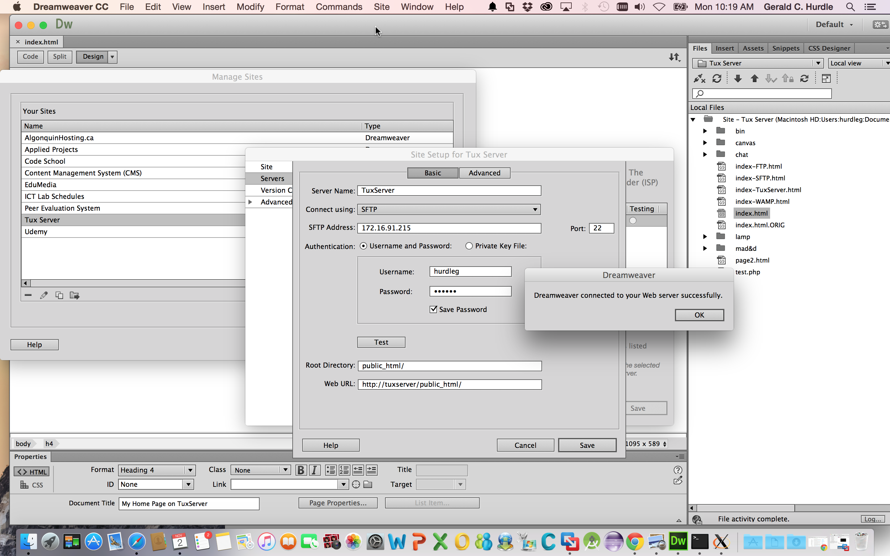
9.0 SFTP Your Web Page to tuxserver
[Tip: in the video I use Adobe's Dreamweaver to ftp my index.html file to tuxserver]
SFTP your index.html from Mac to your public_html folder on tuxserver.
Do you use Filezilla? Read this article on how to configure Filezilla + SFTP:
- https://kb.mediatemple.net/questions/880/Using+FileZilla+for+FTP%7B47%7DSFTP#gs
- https://www.one.com/en/support/faq/how-do-i-connect-to-an-sftp-server-with-filezilla
10.0 View Your Web Page
On Mac, launch Safari and view your web page on tuxserver. You may need to refresh your browser.
- Launch Safari
- To the address bar: <Enter tuxserver's IPv4 network address>/~yourUsernameOnTuxServer
- For example: 172.16.91.216/~hurdleg
Verify your work: If do not see your third web page on tuxserver, you have a problem and need to fix it before proceeding!
Reflection
Congratulations! You can now use SSH to securely FTP (SFTP) your web pages hosted on your Mac to the (virtual) web server called tuxserver.
Notice of Midterm Assessment
Friendly reminder.... the MAD9111 Midterm Assessment is next week.
Essential: your tuxserver VM must be working and functional for next week's project.
SFTP
Week 10
Midterm - Practical
Midterm
Practical Question
On the Mac host operating system, create a file named: test.php
The contents of test.php:
<?php phpinfo( ); ?>
Note: if you use Dreamweaver (like I do :), you may see the document with HTML tags, similar to this:
<!doctype html>
<html>
<head>
<meta charset="UTF-8">
<title>Test PHP on TuxServer</title>
</head>
<body>
<?php
phpinfo();
?>
</body>
</html>
Use a SFTP client (Dreamweaver, Filezilla, or Transmission) to upload test.php to your account on tuxserver. Remember to put test.php in the appropriate directory (folder) that is used by the web server.
On Mac, launch a web browser, such as Safari or Chrome.
Enter the following URL:
http://IP_ADDRESS_OF_TUXSERVER/~USERNAME/test.php
Use appropriate values for:
- IP_ADDRESS_OF_TUXSERVER
- USERNAME
Deliverable
Take a composite screen shot that clearly shows evidence of the following:
- [Mac] SFTP of test.php
- [Mac] browser showing the contents of test.php
- http://IP_ADDRESS_OF_TUXSERVER/~USERNAME/test.php
- [tuxserver] directory listing showing test.php
- use the command: ls -la
- [tuxserver] IP address of tuxserver
Reference Screen Shot
Your screen shot should look very similar to mine:

Troubleshooting
If you don't see what I see, remain calm.
You need to troubleshoot. The good news... all of the information that you require is contained within three labs.
- Is PHP installed? See LAMP
- Is the httpd service running? See LAMP
- Is the vsftpd service running? See SFTP
- Is the ssh service running? See SFTP
- Is the http port open? See FTP
- Is the ssh port open? See SFTP
- Is the IP address for tuxserver correct? See SFTP
Week 11
Mac's Network Utility
You will Learn
To learn about Mac's Network utility app.
References
For additional information, read the following:
- OS X: About Network Utility: http://support.apple.com/en-ca/HT5897
- MAC Address: http://en.wikipedia.org/wiki/MAC_address
What is Network Utility?
Network Utility is graphical user interface (GUI) app that is a visual front-end to some common networking commands.
Usage
Use Network Utility to:
- gather networking information of your Mac. For example, Network Utility will display your IPv4 address.
- help with network trouble-shooting. For example, use Network Utility to help trouble-shoot when your Mac can't connect to the Internet.
To Launch
To launch Network Utility:
- Spotlight -> search: Network Utility -> Click the Network Utility application
Notice the following tabs to common networking tools:
- Info
- Netstat
- Ping
- Lookup
- Traceroute
- Whois
- Finger
- Port Scan
Info
The Info tab displays the following:
- Interface Information
- Transfer Statistics
Interface Information
The Interface Information displays the following information for the selected network interface (sometimes I will say: network adapter).
Use the drop-down list of network interfaces, and select the one with a link status of Active. Your interface will most likely be either Ethernet (en0) or Wi-Fi (en1). You may see different "en" numbers. Plug-in an Ethernet cable to your Mac's ethernet port to connect the Ethernet interface. The type of cable will most likey be one of the following: Cat5, Cat5e, or Cat6. The Wi-Fi interface is used to connect to an access point (AP) wirelessly.
- Hardware Address
- Also known as the Media Access Control (MAC) address or burn-in address, the hardware address is:
A unique identifier assigned to network interfaces for communications on the physical network segment. MAC addresses are used as a network address for most IEEE 802 network technologies, including Ethernet and WiFi. Logically, MAC addresses are used in the media access control protocol sublayer of the OSI reference model.
Each network device on a local area network (LAN) must its own unique hardware address.
MAC addresses are formed according to the rules by the Institute of Electrical and Electronics Engineers (IEEE).
The hardware address is a 48 bit number (6 bytes). The first half of the MAC address (3 bytes) is known as the Organizationally Unique Identifier (OUI). The IEEE administers and assigns OUI numbers to manufacturers of networking devices. An example company is Cisco --- a well-known manufacturer of routers, switches and wireless access points.
A switch uses your MAC address to perform the final delivery of Ethernet frames addressed to you within a local area network (LAN).
- IP Address
-
Your IP address. More specifically, your IP version 4 (IPv4) address. Your IP address was assigned to you dynamically when you cabled in (i.e. plugged in an Ethernet cable) or when you connected wirelessly. When you are on campus at the College, your IP address will have the pattern: 10.X.Y.Z. When you return home after a good day at school, look at your new IP address. Your IP address will have one of the following patterns: 172.16.A.B or 192.168.C.D. IP addresses of these three patterns (10.X.Y.Z, 172.16.A.B, 192.168.C.D) are not publicly routable. Expressed differently: you will never see these addresses on the Internet. In fact, manufactures make their devices to prevent addresses of these patterns from leaking onto the Internet.
A router uses your IP address to deliver packets to another network device identified by its IP address. Routers view IP addresses, and make intelligent decisions on how to best forward packet to its next hop. This continues until the packet reaches its destination as identified by the IP address. If the packet cannot be delivered --- for any reason --- the packet is immediately dropped by the router. You must first know the IP address of the other host before you can exchange network traffic. For example, to surf to a web page, http://edumedia.ca, the web browser first made a network enquiry to a domain name service (DNS) to translate edumedia.ca to its IPv4 address.
- Link Speed
- A measurement of the number of bits you are able to upload (or download) per second. You most likely have a bit rate of 1 Gbit/s, which means 1 Giga-bits per second or 1 000 000 000 bits per second. Generally speaking: the higher the rate (speed), the better :)
- Link Status
- Displays the status of your connection to the network. Another term to describe this type of connection is: link. You should see Active for normal network activity. If the link is down, you will see Inactive. A status of Inactive may not necessarily be a bad thing. For example, I often turn off my Wi-Fi radio to extend my battery life. The status of my Wi-Fi interface is Inactive. A status of Inactive, when you expect Active, is a bad thing :( You'll need to perform network trouble-shooting to establish a network connection.
- Vendor
- Identifies the manufacturer of the network interface. Broadcom is the maker of my Ethernet network interface, and Apple is the vendor of my Wi-Fi network adapter. Can you identify the vendors who made the network interfaces of your Mac?
- Model
- The model of the network interface as set by the Vendor.
Transfer Statistics
This area of the Info tab displays the following information:
- Sent
- Packets
- Errors
- Receive (Recv)
- Packets
- Errors
- Collisions
During normal conditions, you will see:
- Sent Packets: increasing
- Recv Packets: increasing
- Errors: 0 (zero); or a very small number
- Collisions: 0 (zero); or a very small number
Significant non-zero values for either Errors or Collisions is most like due to a problem with your connection to the network.
For comparison, my Info:
- identify the network interface
- what is my MAC address?
- what is my IPv4 address?
- notice: 4 Recv Errors
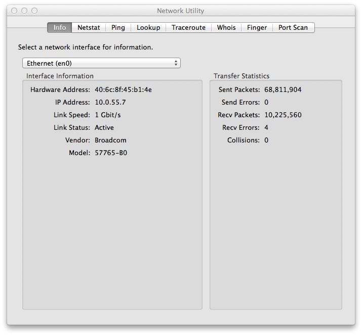
Netstat
The Netstat tab displays the following:
- routing table information
- comprehensive network statistics for each protocol
- multicast information
- the state of all current socket connections
For normal network connectivity, you must know the IPv4 address of your default gateway. To see this important address:
- Select: Display routing table information
- Click: Netstat
Look at the output. Under the first column, Internet:, locate the line starting with the word: default. On the same line, look to the right under the column Gateway. Notice the IPv4 address. This IPv4 address is very important; it represents your default gateway. You must have a default gateway IPv4 address set in order to go off segment. That is, to have network connectivity beyond your local area network (LAN). Suppose you're on campus at the College. Your local area network is the Algonquin College network (general), Woodroffe Campus (more specific). To go off segment means to go beyond Woodroffe Campus and Algonquin College. Think of it as having networking connectivity to the public Internet.
The remaining display options provides very detailed networking information, such as multicast information
Ping
The Ping tab is a front-end GUI to the ping CLI (command line interface) command. The ping command works on MS Windows Command Prompt, Linux Terminal and Mac Terminal. However, the behaviour is slightly different between the operating systems.
Ping is a very, very useful networking tool!
Use ping to test basic reachability between two networking hosts. The two networking hosts may or may not be on the same local area network (LAN).
To use:
- Enter the network address to ping.
- Notice you can ping by IPv4 address OR by name :)
- Set the Send options
- I typically send only 5 packets
- Click: Ping
Look at the output. You should see:
- if you ping by name, the name will be resolved to its IPv4 address
- 5 packets were sent to the network address
- 5 packets were received back from the network address
- 0.0% packet loss
A successful pings tell you:
- you have network reachability from your host computer to the remote host
- the remote host has reachability back to you
In other works, I can send traffic to the remote host, and the remote host can reply back to me.
If you notice a loss of 1 or 2 packets at the start, that may be OK. If you continuously notice packets are being lost, you most likely have a networking issue. You'll need to perform some network diagnostics (i.e. tests) to determine if you really do have an issue or not.
If you see 100% packet loss, you definitely have a networking problem! You'll need to trouble-shoot and determine the cause of your issue and fix-it :)
Important: just because your pings are successful is no guarantee that other networking protocols will work as expected. Consider this scenario: your pings to tuxserver are successful. HOWEVER, all attempts to SFTP your index.html web page to tuxserver fail. Successful pings tell you that you have network reachability to tuxserver. Nothing more. In this little scenario, you will concentrate your efforts and trouble-shoot SFTP:
- confirm the running status of vsftpd (the name of the SFTP server on Linux)
- confirm the running status of sshd
- confirm the firewall port for ssh is open
For comparison, I ping'ed google.com from home (what is google's IPv4 address?):
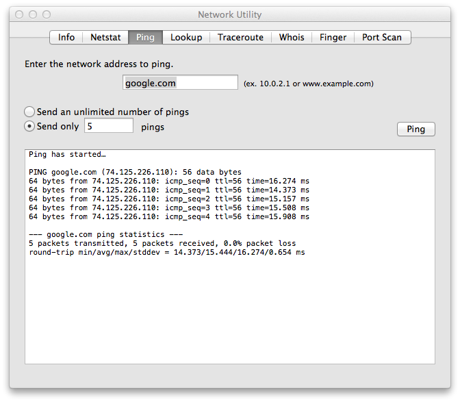
Traceroute
The Traceroute tab is a front-end GUI to the traceroute CLI (command line interface) command. The command works on MS Windows Command Prompt (called tracert), Linux Terminal and Mac Terminal. However, the behaviour is slightly different between the operating systems.
Traceroute displays the path your IP packets travel to reach the specified network destination.
To use:
- Enter the network address to trace.
- Notice you can ping by IPv4 address OR by name :)
- Click: Trace
What you see is the route your IP packets have travelled. This route (path) was determined by routers as your packet travelled across the network. Each line displays the router your packet visited on its journey. The next line represents the next hop. This continues until your IP packet arrives at its final destination. If traceroute cannot reach the remote network destination within 64 hops (on Mac), it quits. This is a safety mechanism: we cannot allow unreachable packets to keep alive and travel within our network. Routers are configured to drop unreachable packets in order to prevent broadcast storms.
That's the normal use case.
Because ping and traceroute can be used by bad people for bad reasons, most Network/System Administrators will block ICMP traffic. Ping generates ICMP traffic, and traceroute makes use of ping.
I (literally) see '*' (stars) when I attempt a traceroute to google.com when I'm on campus :) I suspect our Network Administrators have blocked all ICMP traffic.
A star ('*') symbol may indicate:
- ICMP traffic is being blocked, OR
- there is no route to the destination network address
For comparison, traceroute from my home to google.com:
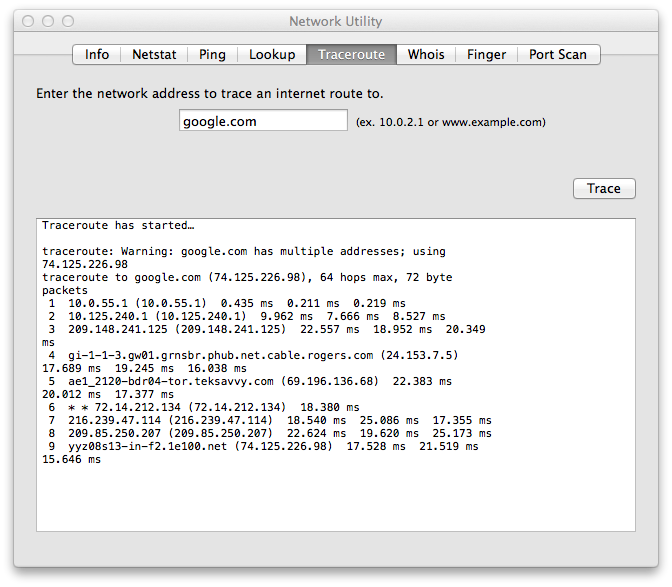
Mac: System Preferences > Network
Question:
You should know where to locate the following pieces of networking information:
Do you where to locate the following pieces of networking information on your MacBook Pro?
- your IPv4 address
- your Subnet Mask
- your Router (also known as your Default Gateway/Route)
- your domain name service (DNS) Server(s)
Answer
To find this information on your MacBook Pro:
System Preferences > Network
You should see what I see:
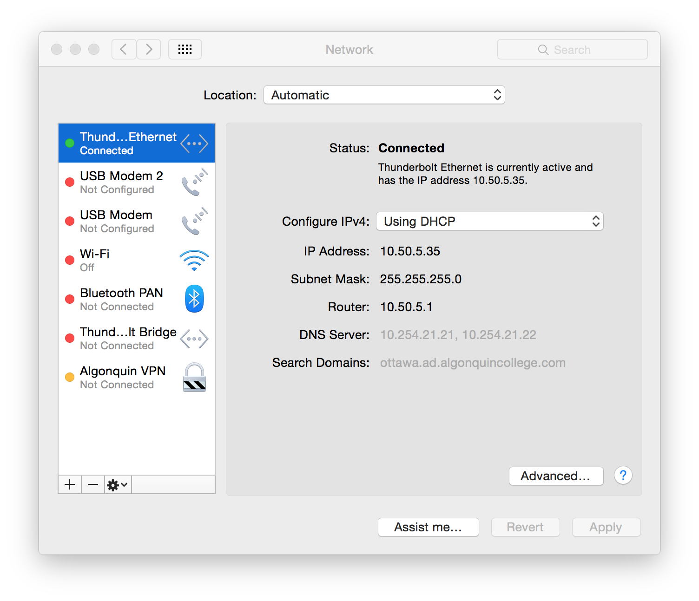
Challenge
Find the same networking information on the following operating systems:
- Linux (use tuxserver)
- Windows (use Bootcamp)
- On tuxserver
- Settings > Network > select: Wired > settings (gear) > Details
Mac: System Preferences > Network
Question:
You should know where to locate the following pieces of networking information:
Do you where to locate the following pieces of networking information on your MacBook Pro?
- your IPv4 address
- your Subnet Mask
- your Router (also known as your Default Gateway/Route)
- your domain name service (DNS) Server(s)
Answer
To find this information on your MacBook Pro:
System Preferences > Network
You should see what I see:
Challenge
Find the same networking information on the following operating systems:
- Linux (use tuxserver)
- Windows (use Bootcamp)
- On tuxserver
- Settings > Network > select: Wired > settings (gear) > Details
Configure VM by Name
Week 12
Essential CLI Commands
Essential CLI Commands
for
OS X and Windows
OS X
On Mac, to launch Terminal.app: Spotlight > Terminal
Note: the vast majority of these commands will run on UNIX / Linux systems.
| Command | Description | Useful Options | Examples |
|---|---|---|---|
| cat | concatenate and print files |
|
|
| cd | change directory |
|
|
| clear | clear the terminal screen |
|
|
| cp | copy files |
|
|
| date | display or set date and time |
|
|
| history | display the command history list with line numbers |
|
|
| ifconfig | configure network interface parameters |
|
|
| kill | terminate or signal a process |
|
|
| ls | list directory contents |
|
|
| man | format and display the on-line manual pages |
|
|
| mkdir | make directories |
|
|
| more |
file perusal filter for crt viewing |
|
|
| mount | mount file systems |
|
|
| mv | move files |
|
|
| nano | Nano's ANOther editor, an enhaned free Pico clone |
|
|
| netstat | show network status |
|
|
| nslookup | query Internet name servers interactively |
|
|
| ping | send ICMP ECHO_REQUEST packets to network hosts |
|
|
| pkill | find or signal processes by name |
|
|
| ps | process status |
|
|
| pwd | return working directory name |
|
|
| rm | remove directory contents |
|
|
| sudo | execute a command as another user |
|
|
| top | display and update sorted information about processes |
|
|
| touch | change file access and modification times |
|
|
| traceroute | print the route packets take to network host |
|
|
| uname | print operating system name |
|
|
| who | display who is logged in |
|
|
| whoami | display effective user id |
|
Windows
Windows 7: Start Button > Run cmd
Windows 10: Search > cmd > Command Prompt
| Command | Description | Useful Options | Examples |
|---|---|---|---|
| cd | Displays the name of or changes the current directory. |
|
|
| cls | Clears the screen. |
|
|
| copy | Copies one or more files to another location. |
|
|
| date | Displays or sets the date. |
|
|
| del | Deletes one or more files. |
|
|
| dir | Displays a list of files and subdirectories in a directory. |
|
|
| help | Provides help information for Windows commands. |
|
|
| ipconfig | The default is to display only the IP address, subnet mask and default gateway for each adapter bount to TCP/IP. |
|
|
| mkdir | Creates a directory. |
|
|
| more |
Displays output one screen at a time. |
|
|
| move | Moves files and renames files and directories. |
|
|
| netstat | Displays protocol statistics and current TCP/IP network connections. |
|
|
| nslookup | query Internet name servers interactively |
|
|
| ping | send ICMP ECHO_REQUEST packets to network hosts |
|
|
| tracert | print the route packets take to network host |
|
IPv4
IPv4 Addresses
Why IPv4 Addresses?
- Unique identifer for each device on the network
- Unique address is enforced by the network
- Host Identification:
- Identifies each host on the network
- Can be customized for each organization
IPv4 Address Format
| Byte 1 | Byte 2 | Byte 3 | Byte 4 | |
| IPv4 Address as a 32-bit number | 11000000101010000000000100001110 | |||
| 32-bit number broken into 8-bit octets | 11000000 | 10101000 | 00000001 | 00001110 |
| Octets are converted to decimal | 192 | 168 | 1 | 14 |
| IP dot notation | 192.168.1.14 | |||
IPv4 Address Classes
| Class A | 1 Bit Fixed | 0xxxxxxx | . | Host | . | Host | . | Host |
| Class B | 2 Bits Fixed | 10xxxxxx | . | Network | . | Host | . | Host |
| Class C | 3 Bits Fixed | 110xxxxx | . | Network | . | Network | . | Host |
| Address Class | First Octet Binary | First Octet | Host Count |
| Class A | 00000001 to 01111110 | 1 to 126 | 16,777,214 |
| Class B | 10000000 to 10111111 | 128 to 191 | 65,534 |
| Class C | 11000000 to 11011111 | 192 to 223 | 254 |
Reserved Addresses
| Network Address | |
| 32-bits | |
| Network Bits | Host Bits are all 0 |
| 192 168 1 | 0 |
| Broadcast Address | |
| 32-bits | |
| Network Bits | Host Bits are all 1 |
| 192 168 1 | 255 |
Private IPv4 Address Space
Request For Comments (RFC) 1918 defines private IPv4 addresses for Class A, B and C. These addresses are not and cannot be routable over the public Internet.
| Class | IPv4 Address Range | ||
| A | 10.0.0.0 | to | 10.255.255.255 |
| B | 172.16.0.0 | to | 172.31.255.255 |
| C | 192.168.0.0 | to | 192.168.255.255 |
DHCP
Dynamic Host Configuration Protocol
(DHCP)
Assigning IP Parameters
In order to participate in an IP network, each hosts' networking parameters must be correctly configured.
At a minimum, each host must have:
- an IP address
- a subnet mask
- a Default Gateway
- a DNS server(s)
These values must be configured for every host. This can be done either statically or dynamically.
Static IP Configuration
IP parameters are usually entered manually for key hosts like routers, servers, and printers. Examples include yourUsername.edumedia.ca, the lab's network printer, and your Linux VM (tuxserver).
Dynamic IP Configuration
Dynamic host configuration protocol (DHCP) is today's commonly accepted method for IP allocation.
DHCP works by providing for a server to allocated the IP information to clients. Clients lease the information from the DHCP server for an administratevely defined period.
DHCP resides in the Application layer of the TCP/IP four-layer model. And is transported over UDP on well-known ports 67 and 68.
DHCP Functional Overview
- DHCP server(s) are configured to provide IP information to clients on locally connected subnets
- IP address pool(s) + exclusions & reservations
- Subnet mask
- Default gateway
- IP of DNS server(s), IP of WINS server, domain suffix, etc.
- clients lease IP information for a configured period
- clients attempt to renw once the half the lease time has expired
DHCP Operation
Steps:
- DHCP client broadcasts DHCP DISCOVER packet on local subnet
- DHCP servers send OFFER packet with lease information
- DHCP client selects lease and broadcasts DHCP REQUEST packet
- Selected DHCP server sends DHCP ACK packet
DHCP Operation - Step 1
Client broadcasts a DHCPDISCOVER packet (UDP from well-known port 68 to well-known port 67).
DHCP Operation - Step 2
DHCP server(s) responds with a DHCPOFFER packet (IP broadcast, but unicast frame).
Why broadcast? To let other DHCP servers know that this DHCP server has made an offer to the client.
Why unicast? The offer is sent as a unicast frame for the client to review.
DHCP Operation - Step 3
Client broadcasts a DHCPREQUEST packet.
Why broadcast? The client has looked over the offer and has decided to accept it. By broadcasting, the other DHCP servers, if any, are informed there offer was not accepted.
DHCP Operation - Step 4
DHCP server resonds with a DHCPACK packet (IP broadcast, but unicast frame).
Why broadcast? To inform all other DHCP servers (if any).
Why unicast? The client receives the IP information.
References
- Cisco CCNA Exploration 4.0 Network Fundamentals.
DHCP
DNS
Domain Name System
(DNS)
In data networks, devices are labeled with numeric IP addresses, so that they can participate in sending and receiving messages over the network. However, most people have a hard time remembering this numeric address. Hence, domain names were created to convert the numeric address into a simple, recognizable name.
On the Internet these domain names, such as www.cisco.com, are much easier for people to remember than 198.133.219.25, which is the actual numeric address for this server. Also, if Cisco decides to change the numeric address, it is transparent to the user, since the domain name will remain www.cisco.com. The new address will simply be linked to the existing domain name and connectivity is maintained. When networks were small, it was a simple task to maintain the mapping between domain names and the addresses they represented. However, as networks began to grow and the number of devices increased, this manual system became unworkable.
The Domain Name System (DNS) was created for domain name to address resolution for these networks. DNS uses a distributed set of servers to resolve the names associated with these numbered addresses.
The DNS protocol defines an automated service that matches resource names with the required numeric network address. It includes the format for queries, responses, and data formats. DNS protocol communications use a single format called a message. This message format is used for all types of client queries and server responses, error messages, and the transfer of resource record information between servers.
DNS is a client/server service; however, it differs from the other client/server services that we are examining. While other services use a client that is an application (such as web browser, e-mail client), the DNS client runs as a service itself. The DNS client, sometimes called the DNS resolver, supports name resolution for our other network applications and other services that need it.
When configuring a network device, we generally provide one or more DNS Server addresses that the DNS client can use for name resolution. Usually the Internet service provider provides the addresses to use for the DNS servers. When a user's application requests to connect to a remote device by name, the requesting DNS client queries one of these name servers to resolve the name to a numeric address.
Computer operating systems also have a utility called nslookup that allows the user to manually query the name servers to resolve a given host name. This utility can also be used to troubleshoot name resolution issues and to verify the current status of the name servers.
When the nslookup is issued, the default DNS server configured for your host is displayed.
We then can type the name of a host or domain for which we wish to get the address. For example, a nslookup query can be made for www.cisco.com. The responding name server provides the address of 198.133.219.25.
The nslookup has many options available for extensive testing and verification of the DNS process.
A DNS server provides the name resolution using the name daemon, which is often called named, (pronounced name-dee).
The DNS server stores different types of resource records used to resolve names. These records contain the name, address, and type of record.
Some of these record types are:
- A - an end device address
- NS - an authoritative name server
- CNAME - the canonical name (or Fully Qualified Domain Name) for an alias; used when multiple services have the single network address but each service has its own entry in DNS
- MX - mail exchange record; maps a domain name to a list of mail exchange servers for that domain
When a client makes a query, the server's "named" process first looks at its own records to see if it can resolve the name. If it is unable to resolve the name using its stored records, it contacts other servers in order to resolve the name.
The request may be passed along to a number of servers, which can take extra time and consume bandwidth. Once a match is found and returned to the original requesting server, the server temporarily stores the numbered address that matches the name in cache.
If that same name is requested again, the first server can return the address by using the value stored in its name cache. Caching reduces both the DNS query data network traffic and the workloads of servers higher up the hierarchy. The DNS Client service on Windows PCs optimizes the performance of DNS name resolution by storing previously resolved names in memory, as well. The ipconfig /displaydns command displays all of the cached DNS entries on a Windows XP computer system.
The Domain Name System uses a hierarchical system to create a name database to provide name resolution. The hierarchy looks like an inverted tree with the root at the top and branches below.
At the top of the hierarchy, the root servers maintain records about how to reach the top-level domain servers, which in turn have records that point to the secondary level domain servers and so on.
The different top-level domains represent either the type of organization or the country of origin. Examples of top-level domains are:
- .au - Australia
- .co - Colombia
- .com - a business or industry
- .jp - Japan
- .org - a non-profit organization
After top-level domains are second-level domain names, and below them are other lower level domains.
Each domain name is a path down this inverted tree starting from the root.
For example, the root DNS server may not know exactly where the e-mail server mail.cisco.com is located, but it maintains a record for the "com" domain within the top-level domain. Likewise, the servers within the "com" domain may not have a record for mail.cisco.com, but they do have a record for the "cisco.com" domain. The servers within the cisco.com domain have a record (a MX record to be precise) for mail.cisco.com.
The Domain Name System relies on this hierarchy of decentralized servers to store and maintain these resource records. The resource records list domain names that the server can resolve and alternative servers that can also process requests. If a given server has resource records that correspond to its level in the domain hierarchy, it is said to be authoritative for those records.
For example, a name server in the cisco.netacad.net domain would not be authoritative for the mail.cisco.com record because that record is held at a higher domain level server, specifically the name server in the cisco.com domain.
References
- Cisco CCNA Exploration 4.0 Network Fundamentals.
DNS
Port Scan
Week 13
HTTPS
How to Configure Secure HTTP on Linux
Purpose
- To enable a secure socket layer (SSL) for the Apache web server.
- To generate a self-signed certificate for the Apache web server.
Before You Begin
Best Practice: make a backup of your tuxservermVM before making changes.
A backup in VMware Fusion is known as a snapshot.
Take a snapshot of tuxserver:
- Launch: VMware Fusion
- Shut Down the tuxserver VM (if not already done so)
- Click: Snapshots
- Click: Take
- In the note area, type: SFTP installation
- Click: Take
Start (i.e. boot) tuxserver
Pre-Conditions
- SELinux has been disabled (reference lab: LAMP)
- httpd has been downloaded, installed and configured (reference lab: LAMP)
1.0 Install SSL for Apache
The basic installation of the Apache web server does not include support for the secure socket layer (SSL).
To install the ssl module, run the following command (in Terminal.app) as a regular user (e.g. hurdleg):
sudo dnf --assumeyes install mod_ssl
2.0 Create a Directory for the Self-Signed Certificate
Use the mkdir command (man mkdir) to create a directory to hold the self-signed certificate:
sudo mkdir /etc/httpd/ssl
3.0 Generate a Self-Signed Certificate
Use openssl to generate your own self-signed certificate:
sudo openssl req -new -x509 -days 365 -nodes \⏎
-out /etc/httpd/ssl/httpd.pem \⏎
-keyout /etc/httpd/ssl/httpd.key
Note: this is a single command that spans three lines; the \ symbol is used to continue the command.
When prompted, enter the following:
- Country Name (2 letter code) [XX]: CA
- State or Province Name (full name) [ ]: Ontario
- Locality Name (eg, city) [Default City]: Ottawa
- Organizational Name (eg, company) [Default Company Ltd]: Algonquin College
- Organizational Unit Name (eg, section) [ ]: MAD&D
- Common Name (eg, your name or your server's hostname) [ ]: tuxserver
- Email Address [ ]: your @AlgonquinLive.com email address
4.0 View the Self-Signed Certificate
Use the catalog command (man cat) to view the contents of the self-signed certificate:
cat /etc/httpd/ssl/httpd.pem
To view the contents of the httpd key file:
cat /etc/httpd/ssl/httpd.key
Important: The httpd key is a private. You should never share this file.
5.0 Configure Apache to Use the Self-Signed Certificate
In this step, you will enable (activate) the secure socket layer (SSL) module of the httpd service.
Use gedit to edit the configuration file:
sudo gedit /etc/httpd/conf.d/vhost.conf
Add the following lines:
<VirtualHost IP-address-of-tuxserver:443>
SSLEngine On
SSLCertificateFile /etc/httpd/ssl/httpd.pem
SSLCertificateKeyFile /etc/httpd/ssl/httpd.key
</VirtualHost>
Replace: IP-address-of-tuxserver with your tuxserver's static IPv4 address.
Note: you can safely ignore the gedit WARNING messages.
Save your changes, and quit gedit.
6.0 Restart Apache
You've just changed the configuration of the httpd service. And when you change a service's configuration, you must remember to restart that service.
Restart the httpd service, and verify it's running:
sudo systemctl restart httpd.service sudo systemctl status httpd.service
Verify: do you see active (running) in green?
- YES - continue
- NO - you have a problem! Please fix before proceeding!
7.0 Firewall Changes
The well-known port for HTTPS is 443. We need to open this port to permit HTTPS traffic destined for tuxserver (i.e. https://tuxserver).
Allow HTTPS traffic on port 443 to pass thru the firewall:
sudo firewall-cmd --permanent --add-service=https
Restart the firewalld service:
sudo systemctl restart firewalld.service
Verify the firewalld service is active:
sudo systemctl status firewalld.service
Verify: do you see active (running) in green?
- YES - continue
- NO - you have a problem! Please fix before proceeding!
8.0 Test
On Mac, use the Safari browser to view your web site hosted on tuxserver with SSL enabled:
- https://tuxserver/~yourUsernameOnTuxServer
- Click: Show Certificate
- Notice: the browser can't trust the authority of your certificate
- Expand: Details
- Notice: the details of your self-signed certificate
- Click: Continue
Reflection
Congratulations! You have now successfully configured tuxserver for secure HTTP.
References
- I found this guide to be very useful. The guide refers to a previous version of Fedora, but all the commands are supported. Of particular interest, instructions are given for installing a commercial SSL certificate.
HTTPS
Week 14
Remote Access to TuxServer
You will Learn
- to use ssh to remotely access tuxserver
What is Remote Access?
In a production environment (i.e. live), servers typically run "head-less." Meaning, the server does not require a GUI (graphical user interface) desktop, monitor, keyboard, mouse, etc. for it to perform its job.
Additionally, you may not have physical access to the server due to security restrictions (plausible) or (more than likely) the server is located far away from your own location.
As an example, consider http://edumedia.ca
Our popular web server is hosted by Tenzing Managed IT Services .
The company has datacenters in Toronto and Kelowna BC (http://www.tenzing.com/tenzing/datacenters/ ). When there is a problem with edumedia.ca, a technician is not sent to Ottawa; and Steve and I don't travel to Toronto.
Instead, we use ssh to remotely connect to edumedia.ca
Usage
Use the command ssh to remotely connect to another host computer.
To remotely connect to tuxserver from your MacBook Pro:
- Boot tuxserver: VMware Fusion > tuxserver > Start Up
- Important: do not log into tuxserver after it finishes booting
- Minimize the VMware Fusion window for tuxserver; this gives the impression that tuxserver is running head-less.
- Open Terminal.app: Spotlight > Terminal
Run the ssh command, remembering to replace hurdleg with your username:
ssh -Y hurdleg@tuxserver
The option '-Y' means (man ssh): enable trusted X11 forwarding. This option is required to forward GUI applications, such as gedit, to appear on your MacBook Pro (and not on tuxserver).
If this is your first time ssh'ing to tuxserver, you'll see something like:
The authenticity of host 'tuxserver (172.16.91.4)' can't be established.
RSA key fingerprint is 20:33:df:2d:9c:2a:69:de:36:42:e2:18:af:11:96:01.
Are you sure you want to continue connecting (yes/no)?
ssh is prompting you to trust (or not) tuxserver. Type:
yes⏎
Next, enter your Linux account's password on tuxserver.
Notice the command-line prompt changes. Yours will be similar to mine:
[hurdleg@tuxserver ~]$
You're now connected to tuxserver remotely.
And you can run your favourite commands. Run the following:
uname -a ⏎ whoami ⏎ who ⏎
Notice the output from the who command. In particular, you'll see you really are remotely connected to tuxserver.
Usage: X-Forwarding
You can even run remote GUI applications on your computer provided the following conditions are met:
- the local host is running an X-11 server; your MacBook Pro is the local host
- the remote host is running an X-11 server; tuxserver is the remote host
- enable X-forwarding when you ssh to the remote host; specify either -X or -Y to the ssh command (see above)
Check it out:
gedit & ⏎ ⏎ # tap the enter key to get the bash prompt back ⏎ firefox & ⏎ ⏎ ⏎
[Be patient as XQuartz launches on your MacBook Pro]
Notice: the command is issued on tuxserver, but the gedit window appears on your MacBook Pro. Juicy!
It gets better... you can even run privileged (i.e. commands that require sudo) GUI applications, such as firewall-config.
Install firewall-config:
sudo dnf install --assumeyes firewall-config ⏎
To run the firewall GUI application:
sudo -E firewall-config ⏎
Safely ignore any warning messages that may appear.
firewall-config is the GUI front-end to the firewalld.service (!) Do you remember how to check the running status of firewalld from the command-line? How to start/stop/restart the firewalld.service?
To terminate your remote ssh connection to tuxserver:
- close all remote GUI applications (e.g. firefox, gedit, etc.)
- run the following command:
logout ⏎ <control>-c⏎ # on Mac: control + c
Welcome back to the world of Mac!
Notes:
- did you notice I appended an "&" (ampersand) to the GUI applications? The ampersand symbol (&) instructs the bash command-line interpreter to run the GUI window in the background. By doing this, you get to see the GUI window (e.g. firefox) AND you run more commands. This is the equivalent to having your cake and eating it too (just not as yummy :).
Quizzes
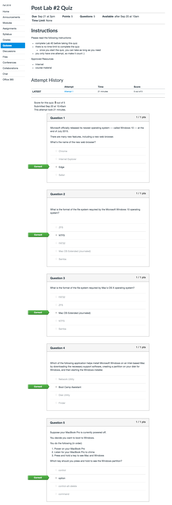
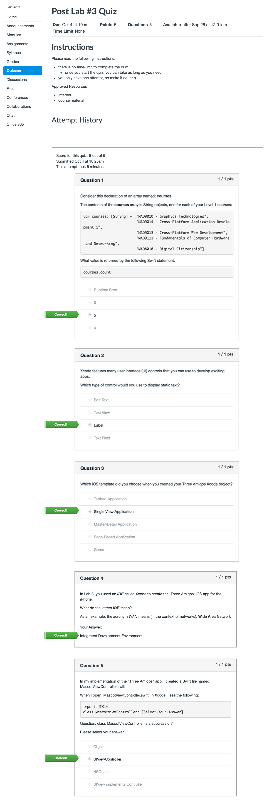
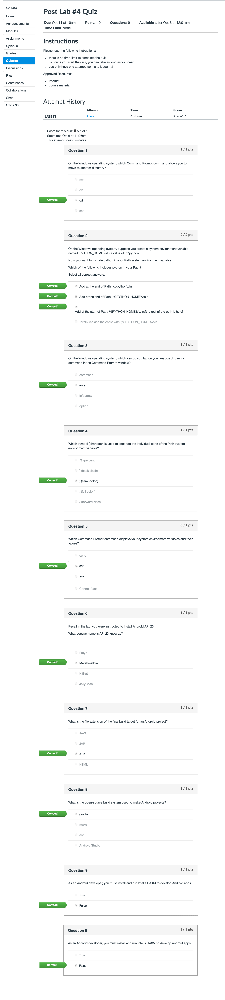
Labs
Lab 1 - Introductions
- Due Sep 14 by 3pm
- Points 5
Modify Your Canvas Profile
- Use Photo Booth to take a photo of yourself.
- Upload your photo to your Canvas profile.
Introduce Yourself by Email
Introduce yourself by sending me an email (Gerald.Hurdle@AlgonquinCollege.com). Please answer the following questions:
- What is your name? Please tell me your preferred name.
- How did you learn about the "Mobile Application Design and Development" program?
- Why did you chose this program?
- What were you doing in June?
- Tell me something unique about you. Do you have a special talent?
My answers (*):
- My (formal) name is Gerald C. Hurdle. Simply call me 'Gerry'.
- Steve and I collaborated to create this unique program. It's the first collaborative program between two schools, Media & Design and Information Communications Technology (ICT).
- I really enjoy writing software. After many years of application development for the desktop and web, I wanted to learn more about mobile app development. So I helped create this program.
- Off on vacation :) My wife had me work on a to-do list of chores :(
- I really enjoy playing electric bass on Rocksmith 2014.
Lab 2 - Install Windows using Bootcamp
How to Install Windows using Boot Camp
and
Your Apple ID
Before You Begin
- review the document How to Install Windows using Boot Camp Assistant
- review the document "Your Apple ID"
- watch the video "How to Take a Screen Shot"
Tasks
- Install and set-up Windows using Boot Camp Assistant on your MacBook Pro.
- Activate Windows with your product key from DreamSpark.
- Set your Apple ID to your Algonquin College email address.
OS X
- Launch Disk Utility :: Applications -> Utilities -> Disk Utility
- Click "BOOTCAMP".
- Take a screen capture.
- Submit your screen capture to Canvas.
- Re-boot to Windows.
- Take a screen capture showing that windows has been activated.
- Control Panel -> System and Security -> System
Your Disk Utility screen capture should look similar to mine:
Windows
Use Windows' Snipping Tool to take a screen-shot of your Windows Desktop.
Deliverables
Upload the following screen-shots to Canvas:
- Disk Utility showing the BOOT CAMP partition (OS X)
- Windows Desktop (Windows)
- your Apple ID; make sure your Apple ID is clearly visible.
Note: the screen-shots must be in PNG format (.png).
Questions
(I don't require the answers. However, these questions make great quiz / exam questions...)
- What is the format of the Windows file system?
- What is the format of the OS X file system?
- hints: use Disk Utility or the 'mount' command (Terminal.app)
Lab 3 - Three Amigos iOS App
The Three Amigos
Your First iOS App in Swift
Before You Begin
Please read & watch the videos: Intro to iOS App Development
Build the App
Build your own version of the Three Amigos app.
Run the App
Build and run your iOS app in the simulator.
Click the 'Play' button (upper left hand side) to build and launch the iOS simulator.
Take a Screen Shot
Use the iOS Simulator to take a screen shot of your running app (File > Save Screen Shot).
The screen shot is saved to your Desktop and is in PNG format.
Deliverables
Two deliverables:
- URL link to your Three Amigos project hosted on your GitHub.com
- MascotViewController.swift
- Screenshot of your app running within the iOS Simulator
Lab 4 - Android Development on Windows
Get the Android SDK on Windows
Tasks
Complete all of the steps in: Setup Android Development [Windows]
Deliverables
Take a single screen-shot of your entire Windows desktop that shows:
- Command window: adb install build\outputs\apk\MyFirstApp-debug.apk
- AVD Emulator: Hello World, username
Reference Screenshot
Your single screenshot should look similar to mine: final.PNG
Submission
Use Canvas' Submit Your Assignment feature to upload your screen-shot (.png).
Lab 5 - WAMP
Before You Begin
Please read the following:
Tasks
Boot to Windows OS, and complete the steps in the WAMP
Deliverables
Use Window's Snipping Tool, and take a single screen shot displaying three open web browsers:
- Browser #1: http://localhost
- Browser #2: http://localhost/MAMP
- Browser #3: http://localhost/username
Upload and submit your screen shot (.png format).
Hybrid - MAMP
Before You Begin
Please read the following:
Tasks
Boot to Mac OS X, and complete the steps in: MAMP
Deliverables
Use Preview (File > Take Screenshot), and take a single screen shot displaying three open web browsers:
- Browser #1: http://localhost
- Browser #2: http://localhost/MAMP
- Browser #3: http://localhost/username
Upload and submit your screen shot (.png format).
Lab 6 - Mobile Device Specifications
Purpose
- To research and document the specifications of different mobile devices.
Work Assignment
You are required to work in groups of size 2 or 3 students.
Please choose your partner(s) wisely.
Important Information: Your Web Site on EduMedia.ca
Did you now... as a MAD&D student, you have your own web site hosted on EduMedia.ca
Your URL address will be of the form:
http://yourAlgonuinCollegeUsername.edumedia.ca
For example, here's my web page:
http://hurdleg.edumedia.ca
How to FTP to Your Account on Edumedia.ca
To FTP web pages (HTML files) to your account on EduMedia.ca, use the following login credentials:
- Username: yourAlgonquinCollegeUsername (e.g. bond007)
- Password: your Student ID without the leading (first) 0 (zero)
Tasks
Together with your lab partner(s), select and sign-out 2 (or 3) different mobile devices from the lab's device cabinet. The number of mobile devices is to equal your group size (i.e. 2 devices for pairs, 3 devices for groups of 3).
The devices must be from different platforms. For example, an Android smartphone and a BlackBerry smartphone would be permitted; a BlackBerry smartphone and a BlackBerry PlayBook would not.
Research the specifications for each device. Document your findings using the device template (see next).
Device Template
Complete this template for each device:
| Device: | Example: iPhone 5 |
| Model: |
A1530: iPhone 5s (GSM model) Note: Model number on the back cover. |
| Platform: | iOS by Apple |
| Width: | 58.5mm |
| Height: | 123.8mm |
| Thickness: | 7.6mm |
| Weight: | 112g |
| Screen Resolution: | |
| Screen DPI / PPI | |
| Storage: | 64 GB |
| Memory: | 1 GB |
| Processor: | Apple A6 |
| Wi-Fi: | Wi0Fi 802.11 a/b/g/n |
| Bluetooth Version: | 4.0 |
| Camera Specifications: | 8 MP 93,264x2,448) |
| Video: | 1080p (30fps) |
| Rated battery life: | 8h talk (3g), 40h music |
| Released: | Sept. 21, 2012 |
| Unique Features: |
|
| Would you purchase this device? Explain your decision. | YES xor NO. Justification.... |
Deliverables
Publish your device specifications as a web page to your http://yourCollegeUsername.edumedia.ca web site. The relative URL must be: /mad9111/lab6/index.html
Don't see the mad9111 folder (directory) on your edumedia.ca? No problem... create it :)
The web page must include an author section that identifies you and your partner(s):
- Firstname Lastname (email address)
For example:
Gerry Hurdle (hurdleg@algonquincollege.com) James Bond (bond007@algonquincollege.com)
Note: use the <mailto:> tag for your @algonquinlive.com email address.
Submission
Use Canvas' Submit Your Assignment and provide the URL to your web page hosted on http://yourUsername.edumedia.ca
Only one submission is required for the group please.
Hybrid - Try Git
Login to your CodeSchool account, and start the CodeSchool course Try Git .
Once you complete the course, submit a screenshot of the page (png) that clearly shows you have "Completed" the course, your current total points and states that you have earned the completion badge.
Lab 7 - LAMP
LAMP
Tasks
Complete all of the steps: LAMP
Important Notes
Please read the following important notes:
- the next series of labs --- Labs 8 and 9 ---- build on this lab (Lab 7)
- the Midterm Assessment (Week 10) requires Labs 7, 8 and 9 to be complete and functional
- the due date for this lab is Wednesday of next week before 11:59pm
- total lab time to complete Lab 7: 6 hours
- Lab 8 will be posted on Tuesday of next week (Week 8)
Deliverables
Take a single screenshot displaying the following:
- browser #1: http://localhost
- browser #2: http://tuxserver/~yourUsernameOnTuxServer
Stage your screen-shot so I can clearly see the content of both pages.
Submission
Use Canvas' Submit Your Assignment feature to upload your screen-shot.
Lab 8 - Linux FTP Server
Linux FTP Server
Tasks
Complete all of: FTP
Deliverable
- On Mac, open a web browser (e.g. Safari) and request your web page on tuxserver.
- htttp://IP_ADDRESS_TO_TUXSERVER/~yourUsernameOnTuxServer
- Take a screen shot (Spotlight > Preview) of the web browser displaying your web page hosted on tuxserver.
Upload your screen shot (PNG format) to Canvas.
Lab 9 - Secure FTP using SSH
Linux SFTP Server
Tasks
Complete all of: SFTP
Deliverable
- On Mac, open a web browser (e.g. Safari) and request your web page on tuxserver.
- http://IP_ADDRESS_TO_TUXSERVER/~yourUsernameOnTuxServer
- Take a screen shot (Spotlight > Preview) of the web browser displaying your web page hosted on tuxserver.
Upload your screen shot (PNG format) to Canvas.
Please Note: due date and time